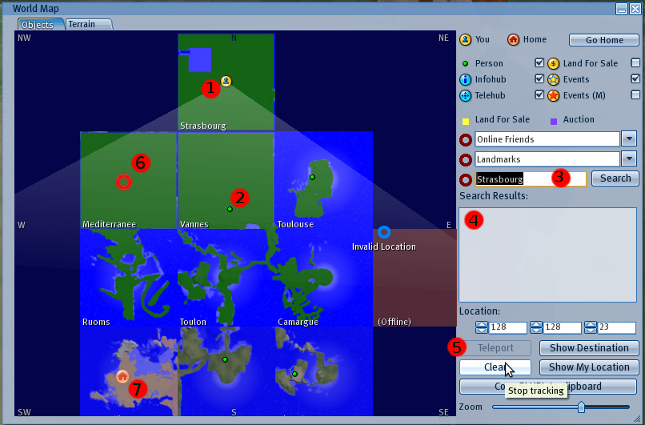
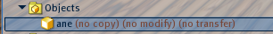
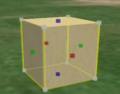

Je me propose de vous faire découvrir OpenSimulator, serveur de mondes virtuels open-source. OpenSimulator est l’alternative libre de SecondLife. C’est un outil très puissant, avec de nombreuses facettes que vous allez découvrir à travers ce tutoriel, et non le clone d’un jeu commercial.
À l’avenir, la 3D prendra sans doute de plus en plus de place sur la Toile. Il est peut-être temps de commencer à s’y intéresser. Ce ne sera pas une corvée, je vous l’assure ! Le sujet est tellement vaste que chacun y trouvera son bonheur. Les créateurs 3D, les développeurs, les entrepreneurs, les joueurs, les utilisateurs vont tous se faire plaisir.
Alors bienvenue dans le monde de l’OpenSim ; que votre créativité et votre imagination s’expriment !
Un tutoriel du Site du Zéro se doit de commencer par les bases. Je vais donc considérer que vous n’avez même jamais entendu parler d’OpenSim, de SecondLife ni de mondes virtuels.
Nous avons vu rapidement dans l’introduction du tutoriel qu’OpenSimulator est un serveur de mondes virtuels open source sous licence BSD.
Un serveur ? Un « monde virtuel » ? Et que veut bien dire l’expression « open source sous licence BSD » ?
OK, OK, le principal ici n’est pas de connaître la définition exacte de ces termes, mais plutôt de cerner le monde de l’OpenSim. Commençons par le début.
La 3D : 3D signifie trois dimensions.
Si vous dessinez sur une feuille, vous travaillez sur un support à deux dimensions : hauteur et largeur.
Si vous sculptez, alors vous travaillez en trois dimensions : la hauteur, la largeur et la profondeur.
OpenSimulator, que l’on abrège par OpenSim, est un logiciel qui utilise un système de fichiers informatiques pour créer une architecture et pour gérer un ensemble d’informations qui vont permettre la construction, l’animation et le contrôle d’images 3D dans l’espace et dans le temps. Ainsi, OpenSim est un serveur qui permet l’utilisation de ces fonctionnalités. Vous pouvez voir ci-dessous un instantané d’une de ces constructions. OpenSim ne crée rien. Il fournit seulement les outils aux utilisateurs pour que ceux-ci puissent inventer, organiser, modeler, agencer, texturer, mobiliser et rendre réactifs tous les composants de cette architecture.
Un logiciel open source est un logiciel dont le code est libre. Ainsi, quiconque peut accéder à ce code pour, par exemple, détecter une erreur ou améliorer les performances du logiciel.
Licence BSD
La licence BSD (Berkeley Software Distribution license) est une licence libre permettant l’utilisation d’un code dans d’autres programmes libres ou propriétaires.
Le monde réel qui vous entoure a trois dimensions spatiales et une dimension temporelle. Il est réel, votre vie et votre mode de vie dépendent des interactions que vous avez avec lui. Avec OpenSim, vous allez pouvoir créer un monde imaginaire fantastique ou plus réaliste à trois dimensions spatiales et une dimension temporelle. Ce monde sera virtuel, vous pourrez interagir avec lui, mais il ne pourra pas vous faire vivre ni mourir.
En résumé, on va dire que le monde matériel dans lequel vous vivez est le monde réel et que le monde que vous construisez et où vous ne vivez pas est virtuel. :-° Un lapin réel :
Un lapin virtuel :
Ce débat n'est toutefois pas hors-sujet. J’aimerais attirer votre attention sur les deux façons différentes d’aborder les mondes virtuels.
Vous pouvez utiliser un monde virtuel pour vous créer une autre vie et pour vous donner l’illusion de vivre réellement dans un monde virtuel. C’est ce qui se passe très souvent sur SecondLife, serveur de monde virtuel propriétaire où les gens peuvent acheter, danser, se marier, avoir des enfants… virtuels.
En revanche, vous pouvez utiliser un monde virtuel comme un outil pour améliorer certains domaines de la vie réelle, pour créer, inventer, communiquer. À mon sens, cette utilisation est la plus adaptée à l’OpenSim, bien que l’autre solution puisse également être envisagée. :(
Vous pouvez utiliser OpenSim de deux façons différentes
Devenir un simple visiteur.
Devenir propriétaire d’un monde virtuel.
C’est exactement pareil pour l’OpenSim. Vous irez visiter des régions OpenSim à l’aide d’un navigateur, qu’on appelle viewerviewer OpenSim. Et si ça vous chante, vous pourrez aussi créer vos propres mondes virtuels pour devenir propriétaire de régions virtuelles.
Malheureusement, il n’est pas encore possible de recourir aux navigateurs web communs (comme Firefox, Internet Explorer, Opera, Netscape, etc.) pour visiter l’OpenSim. Mais heureusement, il existe plusieurs viewers OpenSim faciles à installer aussi bien pour Linux que pour Mac ou Windows. :) Par exemple, on peut citer le viewerHippo, Meerkat ou le viewer de SecondLife.
Il existe la simple région que l'on installe sur son PC sans la connecter à Internet. En général, on l’installe pour apprendre à utiliser OpenSim, ou par pur plaisir d’avoir sa région personnelle. Pour créer une région, on utilisera OpenSimulator en mode Standalone. Ci-dessous, un exemple de région avec un relief en cratère :
On peut connecter une région standalone à Internet. Dans ce cas, à moins de passer beaucoup de temps à faire de la publicité, vous n’aurez pas beaucoup de visites. C’est une bonne solution pour créer un petit réseau 3D virtuel entre amis.
La grille
Vous pouvez également connecter votre région standalone à une grille, structure qui peut accueillir des régions d’origines diverses. Ainsi, votre région pourra interagir avec les régions de personnes venant d’horizons différents. Vous pourrez vous téléporter sur d’autres régions, échanger des objets, parler avec les propriétaires et les visiteurs d’autres mondes, etc. L’intérêt d’une grille est sa visibilité, c’est-à-dire que beaucoup de monde connaît son existence, donc vous aurez plus de chances d’avoir de la visite qu’en mode standalone. Un autre intérêt, le partage des connaissances, des objets, et des bons moments (faire une course de limaces c’est très drôle, et ça rapproche :p ). Voici la carte d’une grille, chaque carré est une région et chaque région peut avoir son adresse propre sur un PC, sur un serveur privé ou sur le serveur de la grille.
Vous pourrez également construire votre propre grille, pour accueillir d’autres régions. Pour cela, il faut utiliser OpenSim en mode Grid. Mais il faut savoir que ce mode demande d’énormes ressources matérielles.
L’hypergrid
Enfin, il existe le mode Hypergrid : vous pourrez facilement connecter votre région ou votre grille à l’hypergrid, qui vous permet de vous téléporter d’une grille (ou région) à une autre grille (ou région). Ainsi vous pourrez, par exemple, aller visiter la grille italienne sans vous inscrire, les grilles des universités américaines, Osgrid, la Francogrid, la région de votre meilleur(e) ami(e), etc. à partir de votre petite région en mode Standalone située sur votre PC, et bien sûr, vous pourrez apporter avec vous des objets, des images, des fichiers de toutes sortes. Et inversement : des visiteurs de tous horizons auront la possibilité de venir sur votre région pour admirer vos créations, assister à vos cours, visiter votre exposition, ou encore discuter avec vous et vos amis, par exemple.
Pour marquer sa présence dans un monde virtuel OpenSim, on utilise des avatars. Ici, ce n’est pas une petite image comme sur un forum, mais c’est un personnage 3D que vous pourrez configurer comme bon vous semble. Cela peut aller de l’humanoïde banal que tout le monde connaît, femme ou homme de tous âges et de toutes tailles, aux dinosaures, monstres hideux, elfes, livres, mouches, vos seules limites sont votre imagination et votre niveau de connaissance des techniques de virtualisation. L’avatar englobe les parties du corps, les animations, les vêtements et une carte de visite. Il peut faire partie de plusieurs groupes.
L’inventaire
Dans l’OpenSim, votre avatar — donc vous-même — possède un inventaire d’items divers et variés. Où que vous soyez, chez vous, sur une autre région ou dans l’hypergrid, vous emportez avec vous cet inventaire, et s’il n’y a pas de bug, vous pourrez l’utiliser. L’image ci-contre représente le menu « Inventory » dans un navigateur. Pour ouvrir l’inventaire, cliquez sur le bouton « Inventory » à droite de la barre de boutons en bas de l’écran.
En réalité, vous disposez de deux inventaires :
l’inventaire de l’OpenSim (OpenSim library), ensemble d’items proposés à l’installation du logiciel ;
votre inventaire personnel (My Inventory) qui est vide à la création de votre compte et que vous remplirez (très vite) avec le temps.
Chaque inventaire comporte des rubriques identiques dont voici une courte description.
Animations : animations pour l’avatar.
Body Parts : parties du corps de l’avatar.
Calling cards : cartes de visite de vos amis.
Clothing : votre garde-robe.
Gestures :
Landmarks : marqueurs de région, utiles pour se téléporter et avoir des informations sur les régions qui vous intéressent.
Lost And Found : objets perdus et trouvés.
NoteCards : notes que vous prenez ou qu’on vous envoie.
Objects : tous vos objets.
Photo Album : album de photographies que vous prenez dans l’OpenSim.
Scripts : petits codes inclus dans certains objets que vous avez codés ou que vous avez reçus.
Sounds : sons, musiques.
Textures : textures d’objets, de vêtements, de peau.
Trash : poubelle.
La communication
Il existe plusieurs façons de communiquer dans l’OpenSim.
Le chat permet les discussions en ligne en temps réel. Tous les visiteurs présents autour de l’avatar qui écrit peuvent lire les messages.
IM est un système de messages privés basé sur la même structure que le chat. Vous envoyez également des messages écrits et instantanés mais cette fois à une seule personne. Vous pouvez les envoyer dans la grille entière, c’est-à-dire d’une région à une autre région.
Les messages inter-régions permettent de communiquer d’une région à une autre région.
Voice, lui, permet une communication orale.
Maintenant, vous en savez un peu plus sur OpenSimulator et ses mondes virtuels. J’espère que cela vous a donné envie d’aller les visiter, de parcourir une grille et ses régions, d’utiliser l’hypergrid pour comparer plusieurs mondes et découvrir d’autres richesses. Si vous voulez vous donner les moyens de le faire, rendez-vous au chapitre 2 de cette partie ! :D
Vous êtes sans doute très pressés d’aller visiter les mondes virtuels de l’OpenSim, vous ne rêvez plus que de survoler des montagnes enneigées ou la tour Eiffel. Vous trépignez d’impatience en pensant aux expositions et aux concerts que vous pourriez découvrir. Et je vous comprends ! ;) Mais avant cela, comme pour tous les plus beaux voyages, il faut un minimum de préparation. Ça ne sera pas long, alors encore un tout petit peu de patience.
Pour visiter un monde virtuel, vous aurez besoin d’une configuration matérielle assez performante. C’est peut-être la limite la plus importante de l’OpenSim actuellement. Comme toute évolution d’Internet, la 3D demande des ressources supplémentaires et l’ensemble des utilisateurs de la toile ne sont pas encore équipés pour profiter de cette technologie.
Configuration minimale indispensable pour visiter un monde virtuel OpenSim
Si votre ordinateur dispose d'au moins la configuration suivante, vous avez toutes les chances de pouvoir aller visiter des mondes virtuels.
Connexion internet : câble ou ADSL.
Système d’exploitation :
Linux : environnement Linux 32-bits récent. Si vous utilisez une distribution 64-bits, vous aurez besoin d’installer un environnement de compatibilité 32-bits.
Windows : XP, Vista ou Windows 7 seulement en 32-bit.
Comme nous l’avons vu dans la présentation d’OpenSim, il existe plusieurs viewers. J’ai choisi de vous faire installer le viewerHippo pour sa fiabilité et sa facilité d’utilisation, et surtout parce que je l’utilise. :p
Euh… Bonjour, je suis un utilisateur Mac, je vous en conjure, dites-moi qu’il y a une version Mac ! :'(
Télécharger le client
Vous pouvez télécharger Emerald sur le site de ModularSystems. Choisissez Macintosh puis téléchargez la version qui correspond à votre architecture.
Une fois téléchargée, l’application Emerald doit apparaître dans une fenêtre ; si ce n’est pas le cas, ouvrez le fichier téléchargé (au format .dmg). Ensuite, glissez Emerald dans votre dossier Applications, ou celui de votre choix.
Ça y est ! Emerald est installé, passons à la configuration !
Pour utiliser Hippo, il faut savoir où on veut aller. Il y a deux possibilités : avoir installé son propre monde virtuel ou avoir un compte sur une grille ou une région standalone. Pour l’instant, vous apprenez à devenir des visiteurs et non des propriétaires de régions. Vous n’avez pas encore votre propre monde virtuel, alors il vous faut impérativement un compte (logique, non ? ;) ).
Quelle grille ?
Il existe déjà beaucoup de grilles OpenSim. Vous pourrez en trouver la liste à cette adresse. J’ai choisi pour ce tuto OsGrid. Cette grille est gratuite et vous serez libre d’y connecter votre propre monde virtuel plus tard. Elle est anglophone mais il existe une communauté francophone où nous pourrions peut-être installer un petit village « Site du Zéro » dans le futur ? :) OsGrid est la grille de référence des développeurs d’OpenSimulator. Si vous préférez un monde francophone allez visiter la FrancoGrid, il semble que la connexion à cette grille soit à nouveau gratuite pour un particulier.
S’inscrire sur OsGrid
L’inscription à OsGrid se fait à cette adresse. Cette page se présente ainsi :
Choix de l’avatar
Sur OsGrid, il n’y a qu’un seul avatar proposé pour votre première connexion. Lors de vos premiers pas sur la grille, vous prendrez l’apparence de l’avatar Ruth, avatar par défaut.
Vous pourrez modifier votre avatar par la suite. Nous verrons cela plus loin dans ce tutoriel.
L’inscription
Vous allez entrer quelques informations dans le formulaire proposé sur la page d’enregistrement à OsGrid. Je pense que vous devriez vous en sortir, mais je vais tout de même détailler cette partie.
Dans le champ d’édition Avatar FirstName LastName (prénom et nom de l’avatar), on vous demande de choisir un prénom et un nom pour votre avatar. Je ne peux pas plus vous aider, c’est à vous d’en trouver un. ^^
Dans le deuxième champ, inscrivez un mot de passe avec plus de 5 caractères et confirmez-le dans le troisième champ.
Votre inscription sera validée par e-mail pour éviter les inscriptions multiples et les robots. Dans le quatrième champ, entrez une adresse e-mail valide.
Voilà, c’est déjà fini ! N’oubliez pas d’envoyer votre demande d’inscription en cliquant sur le bouton « Join Now ».
Quand vous utilisez Hippo pour la première fois, il s’ouvre sur la page d’accueil du site Internet d’OsGrid comme ceci :
Cadre inférieur de la fenêtre :
La fenêtre des préférences
Dans le cadre inférieur de la fenêtre d’Hippo, vous pouvez voir un bouton sur lequel est écrit Grids (numéro 6 sur l’image). Cliquez dessus pour afficher la fenêtre des préférences ouverte à l’onglet Grids, comme ci-dessous.
C’est ici que vous devez entrer les informations de la grille à laquelle vous voulez vous connecter. Par défaut, ces informations sont définies pour OsGrid.
En haut de la fenêtre, à côté de Select a grid (« Sélectionner une grille » en français), un choix déroulant vous propose d’autres grilles prédéfinies dans Hippo. La FrancoGrid ne fait pas partie de cette liste. Imaginez que vous souhaitiez vous y connecter. Vous devriez configurer votre connexion vous-même, comme expliqué dans cette partie.
Ajouter une grille
Rassurez-vous, c’est assez facile ; il suffit en effet d’entrer l’adresse de la grille. :p Allez, c’est parti :
A Tout d’abord, cliquez sur le bouton « Add » (ajouter) de la fenêtre de configuration de la grille.
B Ensuite, dans le champ « Login URI » entrez par exemple l’adresse de la Francogrid : « http://login.francogrid.org/ »
C Pour poursuivre, cliquez sur le bouton « Get Grid Info » (trouver les informations de la grille) situé en dessous. Les informations de la Francogrid devraient s’afficher.
D Cliquez sur OK pour valider la sélection et refermer la fenêtre des préférences.
La page d’accueil de la Francogrid va s’afficher dans votre viewer.
Se connecter à la grille
Dans le cadre inférieur de la fenêtre (voir plus haut) :
1 Entrez le prénom de votre avatar dans le champ Firstname.
2 Entrez le nom de votre avatar dans le champ Lastname.
3 Entrez votre mot de passe dans le champ Password.
5 Cliquez sur le bouton Log In.
Options annexes :
4 Vous pouvez cocher cette case pour que votre mot de passe soit retenu.
6 Ce bouton sert à configurer une nouvelle grille.
7 Ici, vous pourrez choisir de vous connecter pour arriver à votre domicile ou à l’endroit où vous étiez à votre dernière déconnexion ou encore sur une région définie, en entrant son nom. Pour une première connexion, choisissez la première ou la dernière solution.
8 Sélection rapide d’une grille via une liste déroulante.
Se connecter à une grille avec Imprudence pour Mac OS Intel
Configuration du client
Cliquez sur le client Emerald (ou SecondLife), puis dupliquez-le (CMD + D ou Pomme + D) et renommez-le en ajoutant le nom du serveur auquel vous vous connecterez (par exemple, OsGrid). En effet, nous allons modifier le client qui est censé uniquement pouvoir se connecter à SecondLife, ce qui n’est pas nécessaire avec Hippo par exemple, puisqu’il est pensé de façon à pouvoir utiliser d’autres serveurs.
Ensuite, faites un clic droit sur votre version d’Emerald, puis choisissez « Afficher le contenu du paquet ». Une nouvelle fenêtre s’ouvre, allez dans Contents/Resources et ouvrez arguments.txt.
Entrer les coordonnées du serveur OsGrid
Copiez/collez le code suivant dans le fichier texte :
Voilà, cher Mac-user, vous voilà enfin prêt à affronter le monde impitoyable d’OpenSim ! :pirate: OpenSim où règne calme et sérénité ! :ange: Parfois, j’ai l’impression de me contredire…
Voilà, vous êtes enfin connecté à un monde virtuel. :D Vous êtes un petit peu comme un nouveau-né maintenant, il faudra apprendre comment interférer avec ce monde, comment vous déplacer, vous habiller, communiquer. Alors rendez-vous dans le troisième chapitre de cette première partie !
Si vous êtes arrivé jusqu’à ce stade sans embûche, alors vous devez être arrivé sur OsGrid. Ce nouvel univers peut en dérouter certains alors que d’autres se sentiront très rapidement comme des poissons dans l’eau. Mais dans tous les cas, il est impossible de deviner toutes les options offertes par ce monde virtuel et toutes les techniques utilisées pour le parcourir et l’utiliser au mieux.
Les plus débrouillards et les plus téméraires pourront sans doute trouver de nombreux tutoriels à ce sujet. Dans cette partie, j'aimerais tout du moins exposer ce qui est indispensable à la découverte de l’OpenSim, et pourquoi pas plus tard dans d’autres parties, ce qui pourrait faire de vous des utilisateurs avertis du web 3D. :)
Les commandes pour se déplacer dans le monde virtuel
Les commandes pour se déplacer dans le monde virtuel
Ce qu’il faut savoir
1.Les flèches pour marcher sur terre ou sous l’eau et pour voler :
Flèche gauche : tourner à gauche
Flèche droite : tourner à droite
Flèche haut : avancer
Flèche haut deux fois : courir
Flèche bas : reculer
Flèche bas deux fois : courir vers la caméra
2.PgDown et PgUp :
PgDown : pour atterrir
PgUp : pour décoller
Vous pouvez également voler en cliquant sur le bouton Fly en bas de l’écran.
3.Avec la touche Ctrl :
Ctrl + R : toujours courir
Le contrôleur de mouvements
Il remplace les touches du clavier. Pour l’utiliser, cliquez sur les flèches avec la souris.
Pour ouvrir le contrôleur de mouvements, activez « Movement controls » dans le menu View de la barre de menu de Hippo. « Fly » signifie « voler » en anglais.
Il y a plusieurs façons de se téléporter vers un autre endroit d’une région ou d’une grille. Vous pourrez le faire depuis la carte du monde virtuel, ou utiliser une « landmark » (marque de terre), vous pourrez également accepter l’invitation d’une de vos connaissances, ou enfin vous servir d’un téléporteur.
Comment se téléporter à partir de la carte ?
Vous allez ouvrir la carte de la grille en cliquant sur le bouton « Map » de la barre de boutons en bas de la fenêtre. La carte se présente ainsi :

1 Sur la carte, votre position est matérialisée par un personnage dans un disque jaune. 2 Quant aux petits points verts, ils représentent d’autres personnes connectées à la grille, et auxquelles vous pourrez aller dire bonjour si l'envie vous en prend. En général, on est bien accueilli si la personne n’est pas « away » (partie) et si vous parlez la même langue. 3 Dans ce cadre, vous pourrez taper le nom d’une région que vous recherchez. Le résultat s’affichera dans le cadre 4. Dans ce même cadre, sélectionnez la région que vous désirez visiter et cliquez sur le bouton « Teleport » 5 pour vous y téléporter. 6 Vous pouvez également choisir une région en cliquant dans la carte. Un petit cercle rouge s’affichera dans la région. Cliquez également sur le bouton « Teleport » 5 pour vous téléporter vers cette région. Enfin, en double-cliquant directement dans la carte, vous vous téléporterez directement vers l’endroit du clic. 7 Si vous voulez retourner chez vous, cliquez sur l’icône avec une petite maison puis sur « Teleport ». Vous pouvez également cliquer sur le bouton « Go home » en haut et à droite de la partie informative de la carte.
Un petit Travail Pratique
À partir de maintenant, vous êtes capable d’aller à la découverte d’OsGrid. Tournez sur vous-même, pour avoir un aperçu de la région où vous êtes. Vous pouvez avancer, reculer, voler pour vous exercer à tous ces déplacements. Maintenant que vous avez testé les commandes, je vous propose une petite chasse au trésor virtuelle. Suivez mes indices. :pirate:
Ouvrez votre carte et allez à Zapping-comte.
Dans le ciel, on voit plus de choses.
Vous pourrez voir un bâtiment avec de l’eau à l’intérieur.
Déplacez-vous jusqu’à ce bâtiment.
Un petit âne vous attend, il est à vous. :)
Pour prendre le petit âne, faites un clic droit sur lui puis choisissez « More » et « Take Copy ». Solution :
ZoZor est dans le lavoir du château sur « Zapping-comte ».
Si une région vous intéresse particulièrement, vous pouvez créer une Landmark de cette région. Celle-ci se placera dans votre inventaire, dans le dossier… Landmarks… C’est quand même beau la logique. :p Vous pourrez également échanger des Landmarks avec vos amis.
Oui, mais à quoi ça ressemble, une Landmark ?
Pour créer une Landmark de la région où vous vous trouvez, allez dans le menu World (monde) en haut de la fenêtre et cliquez sur Create Landmark Here.
La fenêtre de la Landmark s’ouvre :
Si le propriétaire de la région le désire, il peut envoyer une image de sa région et celle-ci s’affichera dans la Landmark. Dans le cas contraire, vous verrez comme ici un grand cadre gris barré d’une croix.
Cette fenêtre présente plus ou moins d’informations au sujet de la région, comme ses coordonnées par exemple.
Vous pouvez également observer des boutons, parmi lesquels le bouton « Teleport ». Fermez la landmark puis vérifiez dans votre inventaire si elle est bien placée dans le dossier Landmarks.
Vous pouvez ouvrir votre inventaire en cliquant sur le bouton « Inventory » en bas et à droite de votre écran à côté du bouton « Map ».
Maintenant, vérifiez. La landmark doit apparaître comme ceci :
Pour utiliser la landmark à partir de votre inventaire, il suffit de faire un clic gauche de la souris sur son nom : un menu apparaît.
Pour vous téléporter, cliquez sur « Teleport ». C’est long à expliquer, mais c’est simple à faire ! :D
Avant de recevoir une invitation, vous devez avoir au moins un ami. Pour l’instant, vous êtes seul au monde (virtuel). :euh: Ne craignez rien, les gens ne sont pas farouches sur les grilles. Vous pourrez vous faire des « amis » assez rapidement. Mais ça ne va pas être à la vie à la mort tout de suite… le mot « ami » est un peu fort, ce n’est que la traduction de « friend »… Il serait plus juste de les appeler des « connaissances », mais je vais poursuivre avec le terme « ami ». :p
Bon, assez de blabla, comment fait-on pour avoir un ami ?
Pour vous faire un ami
Cliquez avec le bouton droit de la souris sur l’avatar à qui vous voulez envoyer une demande pour devenir ami. Un camembert s’affiche, cliquez sur Add friend. Une boîte de dialogue vous demande de confirmer. Cliquez sur OK.
La personne à qui vous avez envoyé la demande va la recevoir sous la forme d’une boîte de dialogue, elle pourra accepter ou décliner l’invitation.
Voilà, vous avez un nouvel ami virtuel.
Si un de vos amis veut vous faire venir sur une région, il vous envoie un téléporteur
Si vous voulez faire venir un ami près de vous
Faites un clic droit sur votre propre avatar.
Un camembert s’affiche. Cliquez sur « Friends ».
La fenêtre de vos amis apparaît. Sélectionnez celui que vous voulez faire venir, puis cliquez sur le bouton « Teleport ».
Vous venez de voir que vos amis pouvaient vous envoyer des téléporteurs (tp) pour vous inviter à les rejoindre.
Mais vous pouvez également rencontrer des téléporteurs sur les régions que vous visitez. Ils peuvent prendre n’importe quelle forme et fonctionner de différentes façons.
Ils peuvent vous téléporter directement à un endroit lorsque vous faites un clic gauche dessus.
Ils peuvent vous téléporter directement lorsque vous passez à travers, comme une porte des étoiles.
Vous pouvez également rencontrer des objets sur lesquels vous ferez un clic droit, un camembert s’affichera et vous choisirez « téléporter ».
Il doit encore exister d’autres présentations pour les téléporteurs…
Pour visiter d’autres grilles via l’hypergrid, nous allons utiliser les téléporteurs hypergrid de la région Zapping-comte. Alors, vite, recherchez la région Zapping-comte sur la carte de la grille et téléportez-vous-y. Je ne vous dis plus comment faire. :p
Vous êtes sur Zapping-comte ? OK, alors recherchons les téléporteurs hypergrid. Ils sont dans le lavoir où vous avez trouvé ZoZor.
Recherchez cet espace :
Chaque petit panneau est un téléporteur hypergrid sur lequel vous pourrez faire un clic droit.
Une série d’instructions et d’adresses vont s’afficher dans le chat local.
Le chat local ? Qu’est ce que c’est ?
Le chat local est une fenêtre que vous pouvez ouvrir en cliquant sur le bouton « history » en bas à gauche de votre écran. C’est là que vous pourrez converser avec d’autres personnes en local, c’est-à-dire quand vous êtes sur la même région.
Voici un exemple d’instructions affichées dans le chat par le téléporteur hypergrid :
[10:53] Primitive: Pour aller sur Cyberlandia cliquez sur le lien :
[10:53] Primitive: secondlife://hypergrid.cyberlandia.net:9100/
[10:53] Primitive: Pour revenir sur zapping3 cliquez sur le lien :
[10:53] Primitive: secondlife://cogito.no-ip.info:9008/
Vous pouvez suivre ces instructions, elles sont assez explicites. Alors bonne visite de l’hypergrid ! :)
En règle générale, pour vous téléporter vers d’autres grilles, il existe trois méthodes.
Vous pouvez entrer dans le chat l’adresse hypergrid de la simulation que vous voulez aller visiter de cette façon :
secondlife://<adresse de la grille> : <port de connexion>/<region>/<x/y/z/>
où « <region> » est le nom de la région que vous voulez visiter et x, y et z ses coordonnées. x, y et z sont facultatifs.
Vous pouvez également utiliser une landmark pour utiliser l’hypergrid.
Enfin vous pouvez entrer l’adresse du lien hypergrid dans la zone de recherche de la carte mais cette fois en utilisant l’URL de la région comme ceci :
http://<adresse de la grille> : <port de connexion>/<region>/<x/y/z/>
Et n’oubliez surtout pas de prendre avec vous l’adresse de retour, sinon vous devrez vous déconnecter pour revenir chez vous (ce qui n’est pas en soi un si grand malheur :p ).
Ce chapitre est déjà terminé et je pense que vous commencez à bien vous amuser. Mais j’espère surtout que vous arrivez à deviner tout le potentiel de ce nouvel outil.
Dans le prochain chapitre de cette partie, nous approfondirons certaines notions. Nous verrons :
la transformation des avatars ;
la communication sur une grille ;
une initiation à la construction et à l’utilisation des scripts dans l’OpenSim.
Vous avez trouvé ZoZor ? Vous vous êtes un peu promené dans la grille et dans l’hypergrid ? Alors vous vous amusez bien ?
Oui, j’ai trouvé ZoZor, oui, j’explore l’OpenSim. Mais je n’aime pas mon avatar, je n’arrive pas à parler avec les autres, je m’embrouille dans les fonctions de mon viewer et en plus, je suis frustré de n’avoir pas encore construit le moindre petit cube ! Quand est-ce qu’on passe enfin aux choses sérieuses ? :colere2:
Houlà, houlà, oui oui, ça vient ! Un peu de patience. Mais je crois que, dans cette partie, vous allez trouver pas mal de réponses à vos questions. :)
J’ai choisi de vous présenter de façon assez pratique, voire ludique, quelques notions fondamentales de l’OpenSim. Ainsi, après ce nouveau chapitre, j’espère que vous en saurez assez pour aborder la prochaine grande partie : devenir propriétaire.
Plus tard, chacune de ces notions sera développée dans sa propre partie.
Maintenant que vous vous êtes connecté et que vous avez fait vos premiers pas dans un monde virtuel, vous sentez sans doute le besoin de modifier l’apparence de votre avatar, surtout si vous avez encore l’avatar « Ruth » de base ! :D
À la recherche d’un avatar
Trouver ZoZor
Avez-vous trouvé ZoZor sur la région « Zapping-comte » ? Si ce n’est pas le cas, allez vite le chercher dans le lavoir. Vous en aurez besoin pour la suite du tutoriel. Si Zapping-comte n’est pas connecté, vous pourrez également trouver ZoZor sur une autre grille commençant par « Zapping ».
Vous n’arrivez pas à prendre ZoZor ? Voici comment faire :
cliquez sur ZoZor avec le bouton gauche de la souris ;
une fenêtre s’ouvre. Cliquez sur le bouton « Buy » (acheter) pour prendre une copie de ZoZor dans votre inventaire.

Une copie de ZoZor doit avoir pris place dans votre inventaire, comme ceci :
Voilà, vous êtes prêt ? On peut commencer ?
Je ne vois vraiment pas comment ZoZor va pouvoir m’aider à changer d’avatar ! Voulez-vous me transformer en âne ? Je l’aime bien, ZoZor, mais quand même, il y a des limites !
Non non, rassurez-vous, bien qu’en y réfléchissant un peu, vous arriverez peut-être un jour à transformer votre avatar en ZoZor, et vous ne serez alors pas un âne aux yeux des utilisateurs des mondes virtuels, je vous l’assure ! :p
Dans le ventre de Zozor
Les plus attentifs auront sans doute remarqué une liste d’avatars dans la boîte de dialogue au moment où vous avez pris ZoZor. Si c’est le cas, je suis contente, vous ne dormez pas encore ! Pour les besoins du tuto, j’ai créé quatre avatars : un avatar femme, un avatar homme, une jeune et un jeune adolescent. Et ils se cachent tous les quatre dans des boîtes placées dans le ventre de ZoZor. Mais comment les chercher, là est la question.
Tout d’abord, rezez Zozor à partir de votre inventaire :
Puis faites un clic droit sur le petit âne : un camembert apparaît ; cliquez sur « Edit » pour éditer ZoZor.
Ouvrez l’onglet « Content » dans la boîte d’édition de ZoZor.
Les quatre boîtes correspondant aux quatre avatars apparaissent dans la liste du contenu de ZoZor.
Choisissez un des avatars et faites-le glisser dans le dossier « Clothing » de votre inventaire.
Vous pouvez reprendre ZoZor : clic gauche puis « Take » (« prendre ») dans le camembert.
À partir de votre inventaire, rezez cette fois la boîte de l’avatar.
Puis éditez-la.
Allez dans l’onglet « Content » de la fenêtre d’édition de la boîte.
Le contenu de la boîte y est listé.
Ouvrez votre inventaire si ce n’est déjà fait.
Dans le dossier « Clothing », créez un nouveau dossier que vous pouvez appeler « mon avatar ».
Faites glisser un à un les objets contenus dans la boîte de l’avatar vers ce nouveau dossier.
Voilà, votre avatar est prêt à être endossé. Vous pouvez supprimer la boîte : clic droit sur la boîte, « More », puis « Delete ». :D
Un autre avatar
Dans votre inventaire, vous pouvez voir que différents types d’objets composent un avatar. Il y a :
les parties du corps :
la silhouette (« shape ») ;
la peau (« skin ») ;
les cheveux (« hair ») ;
les yeux (« eyes »).
les vêtements :
le T-shirt (« shirt ») ;
la jupe (« skirt ») ;
le pantalon (« pants ») ;
les chaussures ;
la veste ;
les chaussettes ;
les gants ;
les sous-vêtements.
Vous pourrez trouver des avatars complets ou seulement des items isolés sur des régions proposant des freebies. Et ainsi, vous pourrez modifier votre avatar à votre guise. Le procédé reste toujours le même :
clic droit ou gauche sur la boîte de freebies ;
prendre la boîte dans son inventaire ;
rezer la boîte, puis mettre son contenu dans un dossier de l’inventaire.
Préparez-vous à changer
Votre avatar est sans doute déjà composé de certains éléments, comme une peau, une silhouette, des vêtements. Si vous voulez revenir à votre état initial, il est beaucoup plus pratique d’enregistrer cet état dans votre inventaire dans un dossier bien précis. Pour cela, créez un nouveau dossier dans le dossier « Clothing » de l’inventaire et donnez lui un nom : par exemple, « avatar de base ». Pour trouver facilement les items que vous portez, allez dans votre inventaire et cliquez sur l’onglet « Worn items ». Les items portés apparaissent en gras. Vous pourrez les couper et les coller dans le dossier de votre avatar.
Il faut toujours penser « dossier » quand on travaille sur l’avatar.
Changer d’avatar
L’avatar complet
Maintenant, vous devez être fin prêt pour remplacer votre avatar. Et vous allez voir, c’est très rapide. Il suffit de faire un clic droit sur le nom du dossier de l’avatar que vous avez choisi et de cliquer sur « Replace Outfit ». C’est tout. :p
Maintenant, imaginez que vous ayez un certain nombre d’avatars dans des dossiers bien classés. Vous pourrez aisément passer de l’un à l’autre très simplement de la même façon.
Un seul élément
Si vous désirez remplacer un seul élément de votre avatar, il vous suffit de faire un clic droit sur le nouvel élément. Ensuite, sélectionnez « Wear » (« porter ») dans le menu proposé.
La communication est essentielle dans un monde virtuel. Vous aurez à votre disposition plusieurs outils pour communiquer avec les personnes que vous rencontrerez.
Le chat local
Comment l’utiliser ?
Pour l’utiliser, il suffit de cliquer sur le bouton « Chat » à gauche de la barre de boutons en bas de la fenêtre de votre viewer Hippo.
Un bouton « History », suivi d’un champ de saisie, apparaît.
Entrez un texte, par exemple « Bonjour ! » (parce que vous êtes poli ;) ), et cliquez sur « Say » au bout de la ligne, ou appuyez sur Entrée.
Le texte s’affiche dans la fenêtre, précédé de votre identifiant :
Si quelqu’un vous « entend », ou plutôt vous lit, on vous répondra peut-être. Dans ce cas, la réponse, précédée de l’identifiant de votre interlocuteur, s’affichera en dessous de ce que vous venez de dire. Le texte ne reste pas indéfiniment à l’écran et quelquefois, il disparaît avant que vous n’ayez eu le temps de le lire (parce que vous faisiez autre chose ou parce que vous ne lisez pas assez vite). Alors évidemment, il y a une solution ! Vous pouvez ouvrir la fenêtre de chat dans votre viewer en cliquant sur le bouton « History ».
La portée du Chat
Vous pourrez augmenter ce rayon à 100 mètres si vous voulez parler à une personne un peu plus éloignée. Pour cela, au lieu de cliquer sur le bouton « Say » de la fenêtre du Chat, appuyez sur le bouton « Shout » (crier).
Les URL
Vous pouvez envoyer un URL par le Chat.
En cliquant sur le lien ainsi créé, tous les utilisateurs qui recevront votre message pourront ouvrir une fenêtre dans laquelle s’affichera le site en question.
Les IM
Pour envoyer un IM, il y a trois méthodes :
soit vous ouvrez la fenêtre de vos contacts en appuyant sur le bouton « IM » de la barre des boutons en bas de votre viewer :
sélectionnez la personne avec qui vous voulez parler et cliquez sur « Start » ;
soit vous ouvrez la fenêtre « Friends » à partir de la barre des boutons en bas du viewer, sélectionnez un contact puis pressez sur le bouton IM ;
soit vous faites un clic droit sur un avatar et vous choisissez « Send IM ».
Dans tous les cas, une fenêtre d’IM s’ouvre :
Vous pouvez ouvrir autant d’IM que vous voulez (mais il est très difficile de suivre de nombreuses conversations à la fois ! :) ).
La messagerie des groupes
De la même façon que pour les IM, il est possible d’envoyer des messages aux seuls membres d’un groupe quelle que soit leur localisation sur la grille. Cela est très pratique pour annoncer la date d’une rencontre, ou le résultat d’une recherche par exemple. Pour envoyer un message à un groupe, cliquez sur le bouton « Groups » de la barre des boutons en bas de votre viewer puis choisissez un groupe et cliquez sur « IM/Call ».
Le chat vocal
Le chat vocal, comme son nom l’indique, permet les conversations orales. Pour qu’il fonctionne, il faut respecter plusieurs conditions.
La grille et la région que vous visitez doivent être configurées pour permettre le chat vocal.
Mais comment savoir si c’est bien le cas ?
C’est très simple : regardez dans la barre des menus de votre viewer ; une petite icône apparaît à la fin du menu. Si vous voyez cette petite icône, alors le chat vocal n’est pas disponible :euh: :
Vous devez avoir le matériel nécessaire :
un micro et un casque qui fonctionnent bien ;
les options audio de votre ordinateur aménagées en conséquence.
Votre viewer doit être configuré correctement :
tout d’abord, allez dans « Edit/Preferences », puis ouvrez l’onglet « Voice Chat » pour activer le chat vocal comme sur la première image ci-dessous :
puis, en bas à droite de votre viewer, appliquez les réglages comme sur la deuxième image ci-dessus.
Ici, nous allons seulement apprendre quelques bases de la construction dans OpenSim : le build. Je ne pourrai pas tout expliquer et devrai donc faire des choix. Une partie entière sera sans doute consacrée à ce sujet plus tard. Mais vous pourrez dès lors vous entraîner à « builder » sur un bac à sable d’un monde virtuel. Vous pourrez y rezer des prims de toutes sortes et aussi des sculpties.
Ouhlala ! C’est quoi, ce charabia ? Pourriez-vous parler français s’il-vous-plaît ? o_O
En fait, ces nouveaux mots font partie du jargon de l’OpenSim. Vous êtes libre ou non de les employer, mais vous les rencontrerez forcément. Alors, plutôt que de se braquer contre ces anglicismes, voyons un peu ce qu’ils veulent dire.
« Build », « builder », « buildeur »
« Build » signifie « construire » en anglais. Quand on build, on construit des objets dans un univers 3D. Le terme s’est francisé et, par extension, a donné le verbe « builder » et le nom « buildeur » pour celui qui builde.
Nous avons « construction », « construire » et « constructeur » en français, pourquoi ne pas utiliser ces trois termes ?
Oui, je suis assez d’accord avec ça. Mais on ne peut pas changer les habitudes aussi facilement. De plus, une petite nuance est apportée avec l’anglicisme. On builde des objets et pas un terrain, ni un avatar. Ainsi, quand on parle de « build- », on sait tout de suite qu’on parle d'objets créés à partir d’un assemblage.
Quelques mots de vocabulaire
Le bac à sable ou sandbox
Vous ne pourrez pas builder n’importe où sur une grille. La permission n’est pas toujours définie pour tout le monde sur certaines régions. Un bac à sable est un terrain virtuel sur lequel tout le monde peut venir builder, pour s’entraîner par exemple, ou builder à plusieurs.
Prims
Ce mot vient de primitive. Les prims sont en effet les volumes primitifs proposés pour builder. On devrait dire une prim. Mais je n’ai jamais vraiment rencontré de règle à ce sujet. On peut voir « un prim », « un prims », « une prim » ou « une prims ». Je pense que le « s » même au singulier donne un petit genre au mot et beaucoup aiment le prononcer dans tous les cas. À partir de maintenant, dans ce tutoriel, j’écrirai « une prim » et « des prims », quitte à corriger tout le tutoriel quand les habitudes seront prises.
Les prims de base dont vous disposez pour builder sont dans l’ordre de l’image : le cube, le prisme, le tétraèdre, le cylindre, le demi-cylindre, le cône, le demi-cône, la sphère, la demi-sphère, le tore, le tube, l’anneau, les arbres, l’herbe.
Rezer
Je n’ai pas trouvé ce terme dans les dictionnaires anglais. Pourtant, à la base, il est utilisé par les anglophones dans l’OpenSim. Pour autant, il n’est pas étranger au français où « rez » veut dire « sol » : pensez à rez-de-chaussée ou rez-de-jardin. Rezer veut dire « faire apparaître dans le monde » comme si l’objet sortait du sol.
Sculptie
Les prims de base se révèlent quelques fois insuffisantes pour builder certains objets. C’est pourquoi la possibilité d’importer des formes plus complexes a été implémentée dans SecondLife et donc, par extension, dans l’OpenSim. Une « prim sculptée » ou sculptie est une prim dont la forme est déterminée par un tableau de coordonnées x, y et z converties en valeurs RVB et rangées dans un fichier image « tga ». Cette image est la map (carte) du sculptie, c’est un carré de 64 pixels de côté dont voici un exemple.
Pour créer un sculptie, on utilise des logiciels 3D indépendants d’OpenSim comme Blender, Maya ou Wings 3D, puis la map de sculptie est importée dans OpenSim où elle sera appliquée à une prim de base via la fenêtre d’édition de la prim. Une partie devrait être consacrée aux sculpties plus loin dans ce tutoriel. En attendant, vous pourrez trouver quelques cours sur Internet.
Builder une chaise
Jusqu’ici, nous avons vu beaucoup de théorie. Il serait peut-être temps de passer à la pratique, non ? :p
Je pense que vous êtes impatient de builder votre premier objet. Je vous propose un petit TP : la construction d’une chaise. Comme ça, quand vous aurez terminé, vous pourrez vous reposer. En plus, c’est un objet qui n’est pas très compliqué à modéliser. ;)
Rezer une prim
Nous allons commencer par rezer un cube au sol. Pour cela :
faites un clic droit sur le sol, un camembert s’affiche, choisissez « create » (créer) ;
la fenêtre de création s’ouvre et le curseur de la souris se transforme en baguette magique ;
le cube doit être sélectionné dans la fenêtre. Si ce n’est pas le cas, sélectionnez-le comme sur l’image : il prend alors une couleur orangée ;
cliquez sur le sol avec la baguette magique, un cube se reze ; le repère orthonormé du cube est marqué par trois flèches, rouge pour l’axe des x, verte pour l’axe des y et bleue pour l’axe des z (hauteur).
Déplacer, orienter et étirer une prim
Sous l’onglet « Object » de la fenêtre d’édition, vous pouvez voir trois séries de nombres.
La première série correspond à la position de la prim dans la région.
La deuxième série de nombres correspond à la taille de la prim dans ses trois dimensions.
Enfin, la troisième série de nombres correspond à sa rotation par rapport aux trois axes x, y et z. Le centre de rotation d’une prim correspond toujours à son centre de gravité. Cela peut vous sembler anodin pour l’instant, mais lorsque vous voudrez faire pivoter une porte autour d’un axe qui passe par un des côtés de cette porte vous verrez que c’est très important. :-°
Mais revenons-en à notre chaise. Pour simplifier notre travail, nous allons fixer les coordonnées de l’objet dans la région à des valeurs entières. Par exemple, ici, j’écrirai respectivement 114 pour les x, 200 pour les y et 23 pour les z.
Ce cube représente le siège de la chaise. Je vais le placer un peu en hauteur pour me permettre d’ajouter les pieds plus tard. Ensuite nous allons déformer ce cube. Sous la rubrique « size » (taille), écrivez respectivement 0.800 pour x, 0.800 pour y et 0.100 pour z, ce qu’on note (0.8,0.8,0.1).
Vous pouvez également déplacer, orienter et déformer avec la souris la prim sélectionnée. Cette méthode est moins précise mais plus rapide :
pour la placer : sélectionnez « position » puis tirez sur les flèches ;
pour l’orienter : sélectionnez « rotate » puis faites pivoter les anneaux ;
pour la déformer : sélectionnez « stretch » puis tirez sur les petits cubes.

Dupliquer une prim
Pour dupliquer une prim, sélectionnez « Position » dans la fenêtre d’édition pour faire apparaître les flèches. Déplacez ensuite votre prim avec la souris tout en maintenant la touche Shift du clavier enfoncée. Une deuxième prim sera ainsi créée comme sur l’animation ci-dessous.
Cette prim formera le dossier de la chaise. Mais il faut le déformer et le placer correctement. Donnez à votre nouvelle prim les dimensions suivantes : (0.100,1.0,0.800). Maintenant, donnez-lui les coordonnées suivantes : (114.350,200.0,23.550).
Les pieds de la chaise
Essayez vous-même de placer les quatre pieds de la chaise. Vous avez assez de connaissances maintenant pour y arriver seul. Ne regardez pas tout de suite la solution.
Bon courage ! :)
Ça y est, vous y êtes arrivé ? Génial ! Je vous donne tout de même une solution parmi les nombreuses possibles. C’est pour finaliser le tutoriel bien entendu. ;)
Afin de créer le premier pied de la chaise, dupliquez le dossier de la chaise vers le bas et donnez-lui les dimensions suivantes : (0.100,0.100,0.800). Placez le premier pied aux coordonnées (114.350,200.350,22.550).
Maintenant que le premier pied est placé, le reste est assez simple. Je vais en profiter pour vous donner quelques « trucs » pour aller plus vite. Dupliquez le premier pied dans le sens négatif de l’axe des y et placez-le aux coordonnées (114.350,199.650,22.550), seule la coordonnée de l’axe des y change.
Ensuite vous pourrez sélectionner les deux premiers pieds ensemble. Pour cela, sélectionnez un des deux pieds puis faites un clic gauche sur le deuxième en maintenant la touche Shift du clavier enfoncée. Vous pourrez ainsi dupliquer les deux pieds à la fois dans le sens négatif de l’axe des x.
Vous pouvez ajuster les coordonnées de chacun des deux derniers pieds. Leur position sur l’axe des x devra être 113.650.
Voilà, notre chaise est terminée. Félicitations. :soleil:
Informations supplémentaires
Pour lier les prims de votre chaise, sélectionnez-les toutes en maintenant enfoncée la touche Shift comme nous l’avons vu plus haut. Prenez soin de sélectionner le siège en dernier, il deviendra ainsi le parent de toutes les autres prims et l’orientation de votre chaise dépendra de sa seule orientation.
Quand toutes les prims de votre chaise sont sélectionnées, allez dans le menu et choisissez « Tools/Link ». Vous pourrez également délier vos prims en faisant « Tools/Unlink ».
Voilà, maintenant vous pouvez déplacer, orienter ou modifier la taille de votre chaise aussi facilement que si c’était une seule prim.
Appliquer une texture
Nous avons réussi à créer une chaise qui tienne debout. Ce n’est pas vraiment une chaise de style, mais elle est pas mal je trouve, non ? :D Bon, oui, vous avez peut être raison, on pourrait changer sa couleur. La texture « bois clair », ça va un temps.
On a de la chance, il est très facile de modifier la texture de l’ensemble d’un objet. Pour cela, sélectionnez votre chaise et éditez-la. Dans la fenêtre d’édition, ouvrez l’onglet « Texture ».
Maintenant, faites un clic droit sur le petit carré de texture bois, une autre fenêtre s’ouvre. Vous pourrez sélectionner une nouvelle texture disponible dans votre inventaire, par exemple la texture « Steel » (métal). Cliquez sur le bouton « Select » et fermez la fenêtre des textures. Pour donner un aspect métallique à votre chaise, dans la fenêtre d’édition, sous « Shininess », choisissez « Medium ».
Il est possible de définir la texture à « Blank », ou de changer la couleur de votre objet. Faites de nombreux tests, c’est ainsi qu’on apprend le mieux. ;)
C’est bien beau d’avoir une chaise, mais essayez d’asseoir votre avatar dessus…
C’est un peu n’importe quoi, non ? :D
Mais comment faire pour que les avatars se positionnent correctement sur un siège ?
Pour cela, nous allons utiliser un script.
Un script ? Mais comment, et où ? o_O
Oui, j’imagine que certains d’entre vous peuvent être un peu perdus. Alors tout d’abord, je vais vous parler rapidement des scripts dans l’OpenSim et, seulement après, nous verrons comment asseoir votre avatar sur votre magnifique chaise.
Les scripts dans OpenSim
Les objets 3D dans OpenSim peuvent réaliser certaines actions à l’aide de scripts informatiques. Ces scripts sont codés en Linden Scripting Language (LSL), langage de script créé pour SecondLife. Certaines fonctions ont été ajoutées pour OpenSim, c'est l’OpenSim Script (OS), et enfin les scripts peuvent être également écrits en C#.
On utilise ces scripts, par exemple, pour modifier les caractéristiques de l’objet auquel ils sont attachés, leur forme, leur couleur. On peut les faire se déplacer et permettre des interactions avec les utilisateurs.
C’est là que vous allez mettre votre script. Cliquez sur le bouton « New Script ». Une icône avec le nom « New Script » apparaît. Cliquez deux fois sur cette icône pour ouvrir la fenêtre du script. Dans cette fenêtre, on peut écrire ou modifier les scripts.
Vous n’avez encore rien écrit, mais il y a pourtant déjà un script dans la fenêtre. C’est le script qui se crée automatiquement lorsque vous pressez le bouton « New Script ». Ce script écrit dans le chat « Script running » (le script fonctionne). Vous pouvez vérifier dans le chat.
Le script
Voici le script que vous allez copier puis coller dans votre chaise : placez-le dans la fenêtre d'édition du script à la place du script créé par défaut.
Sauvegardez votre script à l'aide du bouton « Save » puis faites un clic droit sur la chaise et choisissez « Sit Here ». Votre avatar devrait s’asseoir. Mais il se peut qu’il soit mal positionné. Dans ce cas, modifiez les coordonnées dans llSitTarget(<-0.05, -0.30, 0.35>,rot); en sachant que le vecteur est construit sur la forme (x, y, z) où x = -0.05, y= -0.30 et z= 0.35.
Vous commencez à vous débrouiller pas mal dans un monde virtuel. Et peut-être que certains se sentent un peu à l’étroit dans leur costume de simple explorateur. Alors pourquoi ne pas devenir créateur de monde virtuel ? Ce sera l’objet de la prochaine partie : « Construire son propre monde virtuel ».
Alors à bientôt ! ;)
Cette première partie est enfin terminée. Vous êtes prêts pour aller un peu plus loin dans la découverte de l’OpenSim.
Dans la prochaine partie, vous allez devenir propriétaire de région. Vous allez tout d’abord apprendre à installer une région sur votre ordinateur, puis vous la connecterez à Internet et enfin à une grille.
L'installation du logiciel Opensimulator dépend d'un certain nombre d'éléments qui diffèrent d'un système d'exploitation à l'autre. Ainsi, la préparation de l'installation d'OpenSimulator ne sera pas la même selon que vous utilisez Windows, Linux ou Mac OS.
Par la suite, à partir de la configuration de l'installation, il n'y aura plus de différence. Allez, c'est un moment légèrement mauvais à passer... surtout pour moi qui ne connais pas bien Windows et encore moins Mac OS !
Encore une fois, il faudra que votre ordinateur atteigne un minimum de performances pour installer correctement une Standalone. Ainsi, tout dépend de l'utilisation qui sera faite du simulateur. Plus les régions seront fréquentées, plus vous aurez de constructions et de scripts, plus les ressources matérielles nécessaires seront importantes. Cependant, une machine avec un processeur standard relativement récent devrait largement suffire. Il est utile d'avoir suffisamment de mémoire vive installée, 1 Go de RAM est déjà un bon départ.
Les outils nécessaires
OpenSim requiert soit le Framework.NET version 3.51 ou supérieure ou Mono 2.4.2.3. Vous pourrez télécharger la version compilée d'OpenSimulator mais vous aurez aussi la possibilité de compiler ses sources selon vos besoins.
Pour un tutoriel fait pour des Zéros comme nous, c'est tout de même pas mal pointu ce que tu nous racontes là. Pourrais-tu nous expliquer un peu mieux, s'il-te-plaît ?
Oui, effectivement, les termes compiler et framework peuvent faire peur à certains d'entre vous. Ne vous inquiétez pas, l'installation d'OpenSimulator n'est pas insurmontable pour autant, vous verrez. :)
Alors pour vous rassurer, je pourrais vous lister sans aucune explication tout ce qu'il y a à faire, comme dans une recette de cuisine. Mais je préfère vous expliquer où nous allons et ce que nous ferons, pour que dans le futur vous vous adaptiez le plus facilement possible aux modifications continuelles d'OpenSim.
Tout apprentissage doit être construit sur des bases solides, n'est-ce pas ? Commençons donc par là.
La compilation
Un ordinateur ne peut exécuter un programme que s'il est écrit en langage binaire, c'est-à-dire en une suite organisée de 0 et de 1. Il est impossible pour le commun des mortels de comprendre et d'utiliser ce langage pour développer un logiciel. C'est pourquoi de nombreux langages informatiques ont été inventés (le langage C, ou le langage C++, par exemple).
Inversement, un ordinateur ne peut comprendre un code écrit en langage informatique. Ainsi pour traduire un code source en langage compréhensible par un ordinateur, c'est-à-dire en langage binaire, on le compile à l'aide d'un logiciel spécial appelé compilateur.
Un framework
On peut traduire ce terme par « atelier de développement ». Sur Wikipédia, on nous apprend qu'un framework est « un ensemble de bibliothèques, d'outils et de conventions permettant le développement d'applications ». On utilise un framework de façon à créer des logiciels de A à Z. Tout est fourni : tant les morceaux de code classés dans des bibliothèques, que des éditeurs de code, des outils de visualisation, ou des compilateurs par exemple.
Framework.NET
Framework.NET est le framework utilisé par le système d'exploitation Microsoft Windows. On utilisera cet outil pour compiler OpenSimulator sous Windows.
Oui c'est bien beau, mais moi j'utilise une distribution de Linux et j'ai un ami qui a un Mac chez lui. On fait comment nous ?
Mono
Rassurez-vous, Miguel de Icaza est passé par là et a initié en 2001 le projet Mono. Mono est une mise en œuvre libre du Framework.NET de Microsoft. C'est une plate-forme de développement de logiciels complète. Mono existe pour Windows, Linux et Mac OS.
Deux solutions pour installer OpenSimulator
Pour installer OpenSimulator vous avez deux possibilités :
Pourquoi utiliser la version déjà compilée d'OpenSimulator ?
Parce que la version compilée proposée correspond au tutoriel ;
parce que vous voulez vous simplifier la vie ;
parce que vous voulez installer une standalone, ou vous connecter à la Francogrid plus tard ;
parce que vous avez essayé de compiler OpenSimulator à plusieurs reprises et que vous n'y êtes pas arrivé ;
parce que vous avez un système d'exploitation Mac OS ;
pour une autre raison.
Pourquoi utiliser la version non compilée d'OpenSimulator ?
Parce que vous aimez vous lancer des défis ;
parce que vous voulez tester une autre version d'OpenSimulator ;
parce que la version proposée au téléchargement n'est pas à jour et que la rédactrice du tutoriel a un gros poil dans la main ;
pour une autre raison.
Tableau récapitulatif
Cette introduction est terminée. Dès maintenant, vous allez préparer les outils nécessaires à l'installation d'OpenSim sur votre ordinateur. Cette préparation dépend de votre système d'exploitation (OS) et de la forme d'OpenSimulator que vous aurez choisie (compilée ou non). Voici un tableau pour vous guider dans ce tutoriel : Cliquez sur l'image pour l'agrandir.
Je vais consacrer un chapitre pour les trois OS suivants : Windows, Linux et Mac OS. Référez-vous au chapitre qui vous intéresse. ;)
Il existe plusieurs versions d'OpenSimulator. Ce logiciel est en version bêta et il est donc en continuelle évolution. En conséquence, les versions se succèdent assez rapidement.
Aujourd'hui, je vais vous proposer de télécharger soit la version 0.7.2 post-fixe d'OpenSimulator. Mais peut-être que cette version ne sera pas la plus récente quand vous lirez ce tutoriel. En effet, il me faudra un petit temps de latence pour réagir et pour envoyer la mise à jour du tutoriel en validation. Si cela prendra assurément du temps, je ne pense pas que ce soit très long. Pour cela, si une nouvelle version est disponible, je vous l'indiquerai via les commentaires le plus rapidement possible.
Décompressez l'archive et retenez le chemin d'accès du dossier ainsi obtenu.
Version instable:
Si vous avez pris un peu d'assurance, vous aurez peut être envie de tester la toute dernière version d'OpenSim. Téléchargez-la en suivant ce lien : http://opensimulator.org/viewgit/
Décompressez l'archive et retenez le chemin d'accès du dossier ainsi obtenu.
Sous Windows vous aurez besoin de MSbuild pour compiler OpenSimulator. MSbuild est fourni dans le framework.NET de Microsoft. C'est un outil de gestion de projet ouvert avec plusieurs compilateurs.
Mais comment se procurer MSbuild ?
Télécharger et installer Framework.NET
S'il n'est pas encore installé sur votre ordinateur, téléchargez puis installez simplement Framework.NET.
Téléchargez l'archive de Framework.NET correspondant à votre système d'exploitation.
Installez Framework.NET sur votre ordinateur.
Compiler OpenSimulator
Allez à la racine du dossier d'Opensimutor. Les dossiers et les fichiers ce présentent ainsi : Cliquez sur l'image pour l'agrandir.
Dans la liste des fichiers, vous devez avoir le fichier runprebuild.bat. Exécutez-le en double-cliquant dessus. Cela aura pour effet de créer un fichier pour Visual Studio 2008, un pour NAnt et un fichier « compile.bat ».
Ici, nous allons utiliser le fichier « compile.bat » pour compiler OpenSimulator. Il a été créé à la racine du dossier d'OpenSimulator. Double-cliquez dessus pour compiler OpenSimulator. Cliquez sur l'image pour l'agrandir.
Une console s'ouvre, et des lignes d'informations défilent pendant toute l'opération. Ce processus est assez long.
Maintenan,t vous allez vérifier si le fichier exécutable OpenSim.exe a bien été créé dans le sous-dossier bin de votre installation. Si oui, l'opération s'est bien déroulée : vous avez compilé OpenSimulator.
Ce n'était vraiment pas la peine de s'en faire tout un monde n'est-ce pas ? :D
Sous Linux lancer OpenSimulator va faire appel à Mono, qu'il faudra donc installer et peut-être même compiler. :p
Installation de Mono
Quelle version ?
Mais pourquoi doit-on compiler Mono alors qu'on l'a dans les paquets de notre distribution ? :(
Mono est peut-être déjà installé sur votre machine mais, par exemple pour Ubuntu Jaunty et versions inférieures, les versions proposées dans les paquets d'installation ne sont pas assez récentes. Nous avons besoin de la dernière version compatible de Mono qui à ce jour est la version 2.4.3. Si Mono n'est pas installé sur votre ordinateur et que votre distribution vous propose cette version, alors installez-la comme vous avez l'habitude de le faire. Si vous ne disposez pas d'un paquet assez récent, il faudra compiler Mono. est peut-être déjà installé sur votre machine mais, par exemple pour Ubuntu Jaunty et versions inférieures, les versions proposées dans les paquets d'installation ne sont pas assez récentes. Nous avons besoin de la dernière version compatible de Mono qui à ce jour est la version 2.4.3. Si Mono n'est pas installé sur votre ordinateur et que votre distribution vous propose cette version, alors installez-la comme vous avez l'habitude de le faire. Si vous ne disposez pas d'un paquet assez récent, il faudra compiler Mono.
Compiler Mono pour Ubuntu
Avant toute chose, vous allez installer quelques outils et dépendances :
Compilez et rendez visible libgdiplus par le système :
cd libgdiplus-2.10
sudo ./configure --prefix=/usr/local
sudo make
sudo make install
sudo sh -c "echo /usr/local/lib >> /etc/ld.so.conf"
sudo /sbin/ldconfig
Compilez Mono :
cd mono-2.10.2
sudo ./configure --prefix=/usr/local
sudo make
sudo make install
Compiler OpenSimulator
Allez à la racine du dossier d'OpenSimutor où vous avez décompressé l'archive. Dans la liste des fichiers, vous devez trouver « runprebuild.sh ».
Ouvrez une console et placez-vous à la racine du dossier Opensimulator.
cd /chemin_du_dossier_Opensimulator
./runprebuild.sh
Quand cette opération est terminée, compilez OpenSimulator avec NAnt. Vous pourrez installer NAnt à l'aide du paquet Ununtu en entrant la commande sudo apt-get install nant Pour compiler OpenSim tapez la commande nant dans la console.
nant
Il se peut que la compilation échoue. Par exemple pour la version 2.10.2 de mono, il faudra une version de NAnt qui n'est pas proposée par Ubuntu. Dans ce cas de figure, utilisez les commandes suivantes pour installer une autre version de NAnt depuis la source et compiler OpenSim :
sudo apt-get remove nant
cd /src
sudo wget http://ftp.novell.com/pub/mono/sources/nant/nant-0.90-src.tar.bz2
sudo tar -xvf nant-0.90-src.tar.bz2
cd nant-0.90-src
sudo make
sudo make install
cd /<dossier d'installation d'OpenSim>/
mono /usr/local/share/NAnt/NAnt.exe
Vous allez désormais vérifier si le fichier exécutable OpenSim.exe a bien été créé dans le sous-dossier bin de votre installation. Si oui, alors l'opération s'est bien déroulée : vous avez compilé OpenSimulator.
Ce n'était vraiment pas la peine de s'en faire tout un monde n'est-ce pas ? :D J'ai l'impression d'avoir déjà écrit cela quelque part… o_O
Normalement vous devez maintenant avoir tout ce qu'il vous faut pour faire fonctionner un monde virtuel sur votre ordinateur.
Mais la configuration du logiciel n'est pas encore faite. Vous disposez à cet effet de fichiers spécifiques qui portent l'extension « .ini » .Nous allons donc nous occuper de ces fichiers, et pour commencer, observons le fichier OpenSim.ini.
Dans le sous-dossier bin du dossier d'installation d'OpenSim, vous trouverez un fichier OpenSim.ini.example. C'est ce fichier renommé en OpenSim.ini que l'on va configurer ici. C'est un fichier très long, avec beaucoup d'options souvent incompréhensibles à première vue et même après. :)
Pour une Standalone simple, il ne faudra pas modifier grand-chose dans ce fichier. Procédez ainsi :
ouvrez le fichier OpenSim.ini.example dans un éditeur de texte ;
configurez votre éditeur de texte pour que les lignes soient numérotées. Ce sera plus simple, tant pour vous que pour moi. ;)
Version OpenSim 0.7.1
À la ligne 171, décommentez la ligne et remplacez false par true comme ceci :
serverside_object_permissions = true
À la ligne 201, pour obtenir un affichage plus détaillé de la carte, décommentez la ligne et remplacez false par true comme ceci :
TextureOnMapTile = true
Si votre simulation n'utilise pas le port 9000, décommentez la ligne 267 et remplacez 9000 par le port que vous utilisez :
http_listener_port = <port que vous utilisez>
Vérifiez que la ligne 738 est bien décommentée comme ceci :
Selon le mode utilisé, « standalone » ou « grid », connecté ou non à l'hypergrid, il faudra inclure différents fichiers de configuration à notre installation. Pour connaître ces fichiers, nous allons participer à un petit jeu de piste. :pirate: Ce jeu de piste se déroulera entièrement dans le sous-dossier « config-include » du dossier bin dans lequel vous vous trouvez déjà.
Première étape
Rendez-vous tout en bas de votre fichier OpenSim.ini que vous venez de configurer. Vous y trouverez cette ligne :
Cela veut dire que le programme va aller lire le fichier de configuration Standalone.ini dans le sous-dossier config-include. Ce fichier est donc inclus à la configuration du programme. ;) Allons donc y jeter un œil.
Deuxième étape
Placez-vous dans le sous dossier config-include où vous trouverez le fichier Standalone.ini. Ouvrez-le dans un éditeur de texte. Au début du fichier nous attend un message (un commentaire) en anglais que je vais traduire ici :
;; S'il vous plaît, ne modifiez pas ce fichier.
;; Toutes les options de configuration sont dans le fichier StandaloneCommon.ini.example,
;; Vous pouvez en faire une copie et le modifier.
Tout est dit. Allons donc chercher le fichier StandaloneCommon.ini.example.
Troisième étape
Pour le moment, nous n'allons faire aucune modification dans ce fichier. Ne le fermez pas tout de suite, mais vous pouvez déjà l'enregistrer sous le nom « StandaloneCommon.ini ». Maintenant, nous allons nous intéresser aux lignes 46 à 48 de ce fichier. On nous envoie un nouveau message, toujours en anglais... que je vais vous traduire ci-dessous :) :
;; Choisissez 0 ou 1 module de cache, et le fichier de configuration correspondant, s'il existe.
;; Copiez le fichier de configuration d'exemple dans votre dossier de configuration et
;;faites les modification que vous désirez à ce niveau.
;; Nous vous recommandons d'utiliser FlotsamAssetCache depuis qu'il est maintenu plus activement.
Nous allons conserver le choix par défaut. Dirigez-vous jusqu'aux lignes 34 et 35. Vous pouvez y lire :
Eh oui ! Vous l'avez deviné. Vous allez devoir inclure un nouveau fichier de configuration (ne le dites à personne, mais c'est le dernier :-° ).
Quatrième étape
Ouvrez le fichier FlotsamCache.ini.example dans votre éditeur de texte. Encore une fois, nous allons conserver la configuration par défaut. Enregistrez ce fichier sous le nom de FlotsamCache.ini. Voilà, nous sommes arrivés à la fin de notre jeu de piste et avons gagné le droit de démarrer notre monde virtuel. :zorro:
Il est temps maintenant de lancer OpenSim dans une console.
Lancer la région dans une console
Commande de lancement
Il vous suffira d'écrire dans votre console :
sous windows : faites un clic droit sur le fichier OpenSim.exe et exécutez-le en tant qu'administrateur. Une fenêtre s'ouvre, c'est la console.
sous Linux et Mac OS : ouvrez une console puis dirigez-vous dans le dossier où est placé OpenSim.exe, et lancez OpenSim.exe avec mono :
cd <chemin vers le dossier de l'archive OpenSim>/bin
mono OpenSim.exe
Puis tapez Entrée. Si tout se passe bien, une suite ininterrompue d'informations défilent dans la console. Vous ne devriez pas avoir de messages écrits en rouge.
Entrer les paramètres de la région
Au bout d'un petit moment, le flux des informations s'arrête sur ce message en anglais que j'ai encore traduit :
=====================================
Nous allons maintenant vous poser quelques questions au sujet de votre région.
Vous pouvez presser 'entrée' sans taper quoi que ce soit pour utiliser
les valeurs par défaut proposées entre crochets [ ].
=====================================
Voici donc ces questions (vous parlerez :pirate: ). On vous demandera les informations suivantes.
Le nom de la nouvelle région : entrez n'importe quel nom, par exemple « Chez moi », et tapez Entrée.
New region name []: Chez moi
UUID de la région, n'écrivez rien pour utiliser celui qui est proposé.
Region UUID [17f06c5c-bda4-4f08-9804-796ca98acc16]:
Les coordonnées de votre région : conservez les coordonnées proposées.
Region Location [1000,1000]:
L'adresse IP interne utilisée : gardez cette IP.
Internal IP address [0.0.0.0]:
Le port : port par défaut 9000.
Internal port [9000]:
Autorisation d'autres ports : ils ne seront pas autorisés ; laissez la valeur false.
Allow alternate ports [False]:
L'adresse IP externe.
Ici vous pourrez entrer soit l'adresse IP 127.0.0.1, soit « localhost ».
External host name [SYSTEMIP]: 127.0.0.1
Nom du nouveau domaine : choisissez un nom pour le domaine.
New estate name [My Estate]: Mon domaine
Le prénom de votre avatar : choisissez un prénom pour votre avatar.
Estate owner first name [Test]: votre_prénom
Le nom de votre avatar : choisissez un nom pour votre avatar.
Estate owner last name [User] : votre_nom
Votre mot de passe : entrez votre mot de passe.
Password: mot_de_passe
Votre adresse e-mail est facultative
Maintenant, vous avez réellement terminé la configuration de votre monde virtuel. Dans votre console, vous devriez vous trouver face à une invite comme ceci :
20:12:36 - [INTERGRID]: Informing 0 neighbours that this region is up
Region (Chez moi) #
Cliquez sur l'image pour l'agrandir.
Le fichier ini d'une région
J'ai bien suivi les indications du tutoriel, mais je me suis trompé ! Comment faire pour corriger la configuration de ma standalone ?
Ne vous inquiétez pas, toutes ces informations sont rassemblées dans un fichier ini. Il suffit d'aller dans le sous-dossier du dossier bin d'OpenSimulator. Vous trouverez le fichier Regions.ini. Vous pourrez l'ouvrir dans un éditeur de texte pour le modifier. Ce fichier se présente ainsi :
J'ai installé, configuré et lancé OpenSimulator avec succès. Mais comment faire maintenant pour aller visiter mon monde virtuel ?
Beaucoup d'entre vous ont sans doute une petite idée de la réponse. Effectivement, vous allez utiliser Hippo viewer. Que ceux qui n'y avaient pas pensé ne fassent aucun complexe. Moi même j'ai eu du mal à dissocier l'installation d'Opensimulator et la visite d'un monde virtuel. :-° Je pense que cela s'est désormais éclairci pour tout le monde. Votre installation est une chose, le visionnage en est une autre.
Configurer votre viewer Hippo
Ici, vous allez configurer Hippo comme vous l'avez fait dans la première partie du tutoriel pour aller visiter Osgrid, à la différence près que cette fois, vous utiliserez le loginuri de votre propre monde virtuel. Ceux qui ne se rappellent plus comment faire peuvent aller faire un petit tour en arrière.
Vous allez faire comme si vous vouliez ajouter une grille, mais dans le champ Loginuri, entrez l'adresse de votre standalone qui est : http://localhost:9000/.
Configurer Emerald pour les utilisateurs de Mac OS
Copiez/collez le code suivant dans le fichier texte :
-loginuri http://localhost:9000/
Votre monde virtuel à sa première seconde d'existence
Lorsque vous arrivez la première fois sur votre région vous voyez ceci :
Faites un zoom arrière pour visualiser votre monde :
Et voilà, petit(e) veinard(e), vous vivez l'instant magique de la découverte de votre propre monde virtuel. Là, maintenant les rêves les plus fous vous viennent en tête. Vous reconstituerez votre habitat, votre village, votre quartier, vous créerez votre futur logement, une exposition de vos plus belles œuvres, un lieu de rencontre pour vos amis… le monde (virtuel) s'ouvre à vous. :magicien:
Une installation et plusieurs régions
Eh bien, dans cette euphorie, je vais vous annoncer une autre bonne nouvelle : vous pouvez profiter de plusieurs régions avec la même installation.
Mais alors comment faire pour ajouter une nouvelle région ?
Il suffit d'ajouter un fichier ini dans votre dossier Régions. Vous allez copier celui qui existe déjà (à l'origine Regions.ini) ; vous allez lui donner un nom, par exemple Regions2.ini. Ensuite, vous modifierez quelques détails dans ce fichier avant de redémarrer OpenSim.
Éditez votre nouveau fichier ini dans un éditeur de texte
Normalement, votre fichier doit se présenter de la sorte :
Enregistrez les modifications. Vous devriez désormais trouver deux fichiers distincts dans votre dossier Régions. Redémarrez OpenSim. Vous obtiendrez deux régions.
Ainsi, vous l'avez sans doute deviné, il suffira de créer un nouveau fichier ini pour obtenir une nouvelle région.
Voilà, j'ai enfin ma région à moi sur mon ordinateur à moi. Mais comment faire pour modifier le relief du terrain ?
Effectivement, dans la première partie de ce tutoriel, je vous ai montré les bases du build, de sorte que vous puissiez vous débrouiller pour la construction. Mais quid de la transformation du terrain ? Jusqu'à présent, pas un mot à ce sujet. Puisque vous étiez visiteur et non-propriétaire, vous n'aviez pas accès à ces nouvelles fonctions. Maintenant que vous êtes propriétaire, voyons un peu de plus près ces nouvelles possibilités, sans toutefois entrer dans les détails.
Terraformer à partir de votre viewer
Vous pouvez terraformer votre région directement à partir de votre viewer. Pour cela, faites un clic droit sur le terrain. Un camembert s'affiche. Choisissez alors « Edit Terrain » : la fenêtre d'édition du terrain apparaît.
Je vais passer rapidement en revue toutes les options qui vous sont proposées. À vous de les tester sur le terrain pour vous entraîner. Il n'y a rien de tel pour apprendre. :D
Select land : activez cette option pour sélectionner une parcelle de votre terrain. Il vous suffira ensuite de faire un clic droit avec la souris puis de la déplacer. Une zone entourée de jaune apparaîtra à l'écran.
Cette fonction sert à définir une zone de terraformation ou à délimiter des parcelles que vous pourrez configurer différemment.
Flatten : option qui sert à aplatir le terrain.
Raise : option pour élever le terrain.
Lower : sert à abaisser le terrain.
Smooth : pour lisser le terrain.
Roughen : utilisez cette option si vous voulez que votre terrain soit moins régulié.
Revert : pour annuler les modifications.
À droite, size permet de régler la taille de la zone modifiée et strength la force du Bulldozer..
Apply to selection : si vous avez sélectionné une zone de terraformation et une option de déformation, cliquez sur « Apply » (appliquer) pour appliquer la déformation à cette zone. Vous pouvez également terraformer votre région en utilisant la souris. Son curseur dépendra de la taille de terraformation sélectionnée. Il se présentera comme sur cette image.
Terraformer depuis la console
J'en vois un ou deux qui peinent à la tâche. :p Normal, ce n'est pas facile de terraformer toute une région à la souris, et même en sélectionnant des parcelles. Il y a mieux et plus radical. La commande de console. :-° Allez, que les Windowsiens ne se fassent pas de soucis, ces commandes vont vous simplifier la vie et même donner un petit coté magique à vos interventions sur votre région, vous verrez. :magicien: Tout d'abord, vous n'aurez pas à connaître ces commandes par cœur. Pour les trouver, il vous suffira d'entrer ceci à l'invite de votre console :
help terrain
Et toutes les commandes s'afficheront ainsi :
=== terrain ===
* terrain load - Loads a terrain from a specified file.
* terrain load-tile - Loads a terrain from a section of a larger file.
* terrain save - Saves the current heightmap to a specified file.
* terrain save-tile - Saves the current heightmap to the larger file.
* terrain fill - Fills the current heightmap with a specified value.
* terrain elevate - Raises the current heightmap by the specified amount.
* terrain lower - Lowers the current heightmap by the specified amount.
* terrain multiply - Multiplies the heightmap by the value specified.
* terrain bake - Saves the current terrain into the regions revert map.
* terrain revert - Loads the revert map terrain into the regions heightmap.
* terrain newbrushes - Enables experimental brushes which replace the standard terrain brushes. WARNING: This is a debug setting and may be removed at any time.
* terrain stats - Shows some information about the regions heightmap for debugging purposes.
* terrain effect - Runs a specified plugin effect
* terrain flip - Flips the current terrain about the X or Y axis
* terrain rescale - Rescales the current terrain to fit between the given min and max heights
Je ne vais pas toutes les passer en revue ici, voyons simplement les commandes les plus utiles.
Pour élever toute la surface de la région à un même niveau, entrez dans la console :
terrain fill 21
21 est un exemple. En dessous de 21, votre terrain sera sous les eaux.
Pour élever le terrain de 1 utilisez la commande :
terrain elevate 1
Inversement, si vous voulez abaisser votre terrain, par exemple de 1, utilisez :
terrain lower 1
Si votre dernière modification ne vous plaît pas, vous pouvez revenir en arrière en utilisant la commande :
terrain revert
Vous avez terraformé votre terrain à la perfection, vous avez réalisé le chef-d'oeuvre de votre vie, mais vous êtes tout de même tenté par une nouvelle modification. Pas de souci : vous pouvez sauvegarder votre terrain sous forme d'une image png. Pour cela il suffira d'entrer la commande suivante dans votre console :
terrain save Nom_du_fichier.png
Le fichier de sauvegarde de votre terraformation se placera dans le dossier « bin » de votre installation OpenSim. C'est une image en dégradé de gris de 256x256 pixels qui dessine la carte de votre région. Les tons les plus clairs représentent les zones les plus hautes, et inversement. En voici un exemple :
Bien entendu, comme vous avez fait une sauvegarde, il est possible de la restaurer. Une commande a été prévue à cet effet. :D
terrain load Nom_du_fichier.png
Modifier la texture du terrain
C'est bien beau de modifier le relief de ma région, mais les textures proposées ne me plaisent pas. Je voulais faire une station de sport d'hiver, et tout est vert ou beige. Comment dois-je faire pour changer cela ?
Il y a aussi une option dans OpenSim pour modifier la texture de votre région. :) Vous allez faire cela à partir de votre viewer. Rendez-vous dans le menu « World/Region/Estate ». Une fenêtre s'ouvre. Cliquez sur l'onglet « Ground Textures » en haut.
Vous pouvez remarquer que quatre textures sont utilisées pour habiller votre région. Elles sont disséminées aléatoirement sur l'ensemble du terrain, mais avec une fourchette d'altitudes privilégiée pour chacune d'elles. Par exemple, la texture « rock » sera utilisée pour les altitudes les plus élevées.
Maintenant, nous allons essayer de remplacer l'herbe par de la neige. Cliquez sur la texture « herbe ». Une fenêtre de choix de textures s'ouvre.
Cherchez « snow » dans votre inventaire, et cliquez sur le bouton « select » de la fenêtre de sélection de texture, puis sur le bouton « apply » de la fenêtre des textures du sol. Votre région devrait se couvrir d'un joli tapis de neige comme sur cette image.
Sauvegarder ou restaurer une région
Sauvegarder votre région
Pour sauvegarder votre sim, vous allez entrer à l'invite de la console cette commande :
Region (Chez moi) # save oar nom_de_la_sauvegarde.tar.gz
Lorsque vous voyez la ligne « Finished writing out OAR for <votre région> » dans votre console, cela signifie que la sauvegarde est terminée. L'archive va se placer dans le dossier « bin » de votre installation.
Restaurer une région
Pour restaurer votre sim, placez un fichier de sauvegarde tar.gz dans le dossier « bin » de votre installation puis entrez à l'invite de la console cette commande :
Region (Chez moi) # load oar nom_de_la_sauvegarde.tar.gz
Le message « Successfully loaded archive » (achive chargée avec succès) s'affiche, suivi des éventuels scripts et objets chargés de votre région. Cela peut prendre plus ou moins de temps suivant le nombre d'items que contient votre région.
Les autres commandes de console
Lister les commandes
Pour connaître les autres commandes de console, il suffit d'entrer « help » à l'invite de votre console. Toutes les commandes disponibles seront listées.
Region (Chez moi) # help
Les voici :
alert <message> - Send an alert to everyone
alert-user <first> <last> <message> - Send an alert to a user
appearance show - Show appearance information for each avatar in the simulator.
backup - Persist objects to the database now
bypass permissions <true / false> - Bypass permission checks
change region <region name> - Change current console region
command-script <script> - Run a command script from file
config get [<section>] [<key>] - Synonym for config show
config save <path> - Save current configuration to a file at the given path
config set <section> <key> <value> - Set a config option. In most cases this is not useful since changed parameters are not dynamically reloaded. Neither do changed parameters persist - you will have to change a config file manually and restart.
config show [<section>] [<key>] - Show config information
create region ["region name"] <region_file.ini> - Create a new region.
create user [<first> [<last> [<pass> [<email>]]]] - Create a new user
debug packet <level> - Turn on packet debugging
debug permissions <true / false> - Enable permissions debugging
debug scene <cripting> <collisions> <physics> - Turn on scene debugging
delete asset <ID> - Delete asset from database
delete object creator <UUID> - Delete object by creator
delete object name <name> - Delete object by name
delete object outside - Delete all objects outside boundaries
delete object owner <UUID> - Delete object by owner
delete object uuid <UUID> - Delete object by uuid
delete-region <name> - Delete a region from disk
dump asset <ID> - Dump asset to a file
edit scale <name> <x> <y> <z> - Change the scale of a named prim
emergency-monitoring - Go on/off emergency monitoring mode
estate - Execute subcommand for plugin 'estate'
export-map [<path>] - Save an image of the world map
fcache assets - Attempt a deep scan and cache of all assets in all scenes
fcache clear [file] [memory] - Remove all assets in the cache. If file or memory is specified then only this cache is cleared.
fcache expire <datetime> - Purge cached assets older then the specified date/time
fcache status - Display cache status
force permissions <true / false> - Force permissions on or off
force update - Force the update of all objects on clients
help [<command>] - Get general command list or more detailed help on a specific command
help estate - Get help on plugin command 'estate'
help land - Get help on plugin command 'land'
help terrain - Get help on plugin command 'terrain'
help tree - Get help on plugin command 'tree'
help windlight - Get help on plugin command 'windlight'
kick user <first> <last> [message] - Kick a user off the simulator
kill uuid <UUID> - Kill an object by UUID
land - Execute subcommand for plugin 'land'
link-mapping [<x> <y>] - Set local coordinate to map HG regions to
link-region <Xloc> <Yloc> <ServerURI> [<RemoteRegionName>] - Link a HyperGrid Region. Examples for <ServerURI>: http://grid.net:8002/ or http://example.org/path/foo.php
load iar [-m|--merge] <first> <last> <inventory path> <password> [<IAR path>] - Load user inventory archive (IAR).
load oar [--merge] [--skip-assets] [<OAR path>] - Load a region's data from an OAR archive.
load xml [-newIDs [<x> <y> <z>]] - Load a region's data from XML format
load xml2 - Load a region's data from XML2 format
login disable - Disable simulator logins
login enable - Enable simulator logins
login level <level> - Set the minimum user level to log in
login reset - Reset the login level to allow all users
login status - Show login status
login text <text> - Set the text users will see on login
modules list - List modules
modules load <name> - Load a module
modules unload <name> - Unload a module
monitor report - Returns a variety of statistics about the current region and/or simulator
physics get - Get physics parameter from currently selected region
Invocation: physics get [<param>|ALL]
physics list - List settable physics parameters
Invocation: physics list
physics set - Set physics parameter from currently selected region
Invocation: physics set <param> [<value>|TRUE|FALSE] [localID|ALL]
quit - Quit the application
region restart abort [<message>] - Abort a region restart
region restart bluebox <message> <delta seconds>+ - Schedule a region restart
region restart notice <message> <delta seconds>+ - Schedule a region restart
reload estate - Reload the estate data
remove-region <name> - Remove a region from this simulator
reset user password [<first> [<last> [<password>]]] - Reset a user password
restart - Restart all sims in this instance
save iar [--p|-profile=<url>] [--noassets] <first> <last> <inventory path> <password> [<IAR path>] [--v|-verbose] - Save user inventory archive (IAR).
save oar [-p|--profile=<url>] [--noassets] [--perm=<permissions>] [<OAR path>] - Save a region's data to an OAR archive.
save prims xml2 [<prim name> <file name>] - Save named prim to XML2
save xml - Save a region's data in XML format
save xml2 - Save a region's data in XML2 format
set log level <level> - Set the console logging level
set region flags <Region name> <flags> - Set database flags for region
set terrain heights <corner> <min> <max> [<x>] [<y>] - Sets the terrain texture heights on corner #<corner> to <min>/<max>, if <x> or <y> are specified, it will only set it on regions with a matching coordinate. Specify -1 in <x> or <y> to wildcard that coordinate. Corner # SW = 0, NW = 1, SE = 2, NE = 3.
set terrain texture <number> <uuid> [<x>] [<y>] - Sets the terrain <number> to <uuid>, if <x> or <y> are specified, it will only set it on regions with a matching coordinate. Specify -1 in <x> or <y> to wildcard that coordinate.
set user level [<first> [<last> [<level>]]] - Set user level. If >= 200 and 'allow_grid_gods = true' in OpenSim.ini, this account will be treated as god-moded. It will also affect the 'login level' command.
show account <first> <last> - Show account details for the given user
show caps - Shows all registered capabilities
show circuits - Show agent circuit data
show connections - Show connection data
show digest <ID> - Show asset digest
show http-handlers - Show all registered http handlers
show hyperlinks - List the HG regions
show info - Show general information about the server
show modules - Show module data
show names - Show the bindings between user UUIDs and user names
show neighbours - Shows the local regions' neighbours
show pending-objects - Show # of objects on the pending queues of all scene viewers
show pqueues [full] - Show priority queue data for each client
show queues [full] - Show queue data for each client
show ratings - Show rating data
show region <Region name> - Show details on a region
show regions - Show region data
show stats - Show statistics
show threads - Show thread status
show throttles [full] - Show throttle settings for each client and for the server overall
show uptime - Show server uptime
show users [full] - Show user data for users currently on the region
show version - Show server version
shutdown - Quit the application
sun - Usage: sun [param] [value] - Get or Update Sun module paramater
terrain - Execute subcommand for plugin 'terrain'
tree - Execute subcommand for plugin 'tree'
unlink-region <local name> - Unlink a hypergrid region
windlight - Execute subcommand for plugin 'windlight'
Détail de quelques commandes
alert <message> : envoie un message à tous les utilisateurs. Remplacez <message> par votre message.
alert-user <first> <last> <message> : envoie un message à un utilisateur. Remplacez <first> par son prénom, <last> par son nom et <message> par votre message.
change region <region name> : Change la région courante de la console.
create region ["region name"] <region_file.ini> : crée une nouvelle région pendant que la simulation est démarrée. Vous aurez à entrer son UUID, son port et ses coordonnées. Si vous entrez des paramètres déjà utilisés, la simulation s'arrête.
create user [<first> [<last> [<pass> [<email>]]]] : crée un nouvel utilisateur. Entrez respectivement son prénom, son nom, un mot de passe et éventuellement son adresse e-mail.
delete object name <name> : supprime un objet défini par son nom.
delete-region <name> : supprime une région. Il est peut être plus prudent de renommer le fichier de configuration de la région puis de redémarrer la simulation. Par exemple, vous pourriez renommer regions.ini en regions.ini-old.
help [<command>] : Affiche de l'aide au sujet d'une commande de console.
help windlight : aide pour le plugin windlight.
kick user <first> <last> [message] : Fait sortir un utilisateur de la simulation.
load iar [-m|--merge] <first> <last> <inventory path> <password> [<IAR path>] : restaure l'archive de l'inventaire d'un utilisateur avec l'option -m ou --merge pour fusionner l'inventaire chargé avec l'inventaire de l'avatar. <first> est le prénom de l'avatar, <last> son nom, <inventory path> est le dossier où charger l'inventaire, <password> le mot de passe de l'avatar et [<IAR path>] est l'adresse du fichier qui sera importé.
load oar [--merge] [--skip-assets] [<OAR path>] : restaure une région à partir d'une archive OAR. L'option --merge fusionne l'OAR avec la scène existante, --skip-assets ignore les assets de l'oar, [<OAR path>] est l'adresse du fichier qui sera importé.
login disable : désactive la connexion à la simulation.
login enable : active la connexion à la simulation.
login status : affiche le statut de la connexion, selon qu'elle soit activée ou désactivée.
login text <text> : définit le texte que les utilisateurs voient à la connexion.
modules list : affiche la liste des modules installés.
monitor report : renvoie quelques statistiques concernant la région courante et/ou la simulation.
quit : quitte l'application.
reset user password [<first> [<last> [<password>]]] : réinitialise le mot de passe d'un utilisateur.
restart : redémarre toutes les simulations.
save iar [--p|-profile=<url>] [--noassets] <first> <last> <inventory path> <password> [<IAR path>] [--v|-verbose] : sauvegarde l'inventaire d'un utilisateur. -p|--profile=<url> ajoute l'url du service de profil pour sauvegarder les informations de l'utilisateur. [--noassets] permet de faire une sauvegarde sans les assets.
save oar [-p|--profile=<url>] [--noassets] [--perm=<permissions>] [<OAR path>] : sauvegarde une région dans une archive OAR. [--noassets] permet de faire une sauvegarde sans les assets.
show info : donne des informations générales au sujet de l'installation.
show neighbours : affiche les régions voisines de chaque région.
terrain : exécute des sous-commandes pour le plugin « terrain ». Référez-vous au paragraphe « Terraformer depuis la console » plus haut dans ce même chapitre.
tree : sous-commandes exécutées pour le plugin « tree ».
windlight : Sous-commandes exécutées pour le plugin « windlight ».
Vous pouvez maintenant vous entraîner à builder, terraformer, transformer votre avatar sur votre propre standalone. Mais vous aurez sans doute bientôt très envie de présenter votre domaine à des amis via internet. Dans le prochain chapitre, nous découvrirons comment connecter et gérer votre simulation lorsqu'elle est accessible à d'autres personnes.
À partir d'ici, vous devriez déjà savoir créer et explorer un monde virtuel OpenSim. Vous n'êtes bien entendu pas encore des experts. Mais vous pouvez vous balader facilement sur une grille et communiquer avec d'autres utilisateurs. Vous savez installer une standalone, vous pouvez modifier votre avatar, vous buildez quelques constructions simples, vous savez utiliser un script et vous avez appris à terraformer une région.
Alors, sans doute rêvez-vous de faire découvrir votre nouveau monde à vos amis via Internet, et pourquoi pas à d'illustres inconnus qui passeraient là par hasard ?
Je me propose de vous expliquer comment faire visiter votre standalone dans ce nouveau chapitre.
Pour accueillir des visiteurs sur votre standalone, vous devrez vous intéresser à trois domaines importants : la connexion à Internet, la base de données qui va enregistrer et organiser tous les composants du monde virtuel et enfin la gestion de la propriété dans un monde virtuel.
Dans ce chapitre, nous allons découvrir pas mal de notions théoriques. Allez courage, pensez à votre monde virtuel visité par plusieurs de vos amis. Ça vaut le coup, non ? Et puis ça ne sera pas si difficile que ça, vous verrez. ;)
La connexion à internet
Fonctionnement d'OpenSim
Sur le schéma, vous pouvez voir trois cadres verts. Ils représentent respectivement :
votre réseau personnel ;
votre fourniseur d'accès qui vous relie à Internet ;
et le réseau d'un de vos amis.
Si vous voulez configurer votre système pour connecter votre standalone à Internet, il faut bien comprendre ce qui se passe chez vous. Votre système est composé de deux éléments encadrés en rouge sur le schéma :
votre ou vos ordinateur(s) ;
un routeur qui est l'interface située entre votre réseau et le réseau externe. Ainsi, seul le routeur est visible depuis l'extérieur. Son adresse est votre adresse IP externe. Le routeur dirige les informations à travers votre réseau : pour cela, il a besoin des adresses IP internes de vos ordinateurs et des ports utilisés par les logiciels actifs.
Ensuite, dans l'ordinateur dans lequel est installé votre standalone, vous devez avoir quatre composants importants entourés en bleu sur le schéma :
un firewall ou pare feu qui régit les règles de communication de votre ordinateur avec l'extérieur ;
l'installation de votre standalone ;
le viewer Hippo ;
et une base de données.
Votre ami devra installer et configurer le viewer Hippo. Vous savez faire cela, il vous sera donc très facile de le conseiller. ;)
Les adresses IP
Je ne vais pas vous faire un cours complet sur les adresses IP (j'en serais bien incapable :p ), mais simplement vous donner les informations essentielles pour que vous puissiez connecter votre standalone à Internet. Tout d'abord, vous devez connaître votre adresse IP externe, ainsi que l'adresse IP interne ou locale de votre ordinateur.
L'adresse IP interne ou locale est l'adresse de votre PC à l'intérieur de votre réseau local. Chez tout le monde, elle a la forme 192.168.XXX.XXX. Pour la trouver, voici ce que vous devez faire.
Sous Windows : allez dans le menu démarrer. Dans « rechercher » tapez « cmd », une fenêtre noire s'ouvre. Tapez « ipconfig », votre IP locale doit s'afficher.
Sous Linux et MacOS : dans une console, tapez « ifconfig ». De nombreuses informations s'affichent. Vous trouverez l'adresse IP locale sous la forme : « inet adr : 192.168.XXX.XXX ».
L'adresse IP externe : c'est l'adresse de votre connexion à Internet. Si vous ne la connaissez pas, vous pourrez la trouver ici par exemple : http://www.mon-ip.com/.
Adresse IP externe fixe ou dynamique ? Votre fournisseur d'accès à Internet vous attribue une adresse IP. Il peut vous donner toujours la même adresse : ainsi, votre adresse IP externe sera fixe ou stable. Inversement, il peut la changer à chacune de vos connexions ; dans ce cas, l'adresse est dite dynamique.
Pourquoi faut-il s'occuper de cela pour connecter une standalone ?
Si votre IP est fixe, alors aucun souci ; en revanche, si elle est dynamique, vous devrez reconfigurer votre installation à chaque connexion... ça risque d'être assez fastidieux, non ? :(
Comment savoir si mon adresse IP est fixe ou dynamique ?
Sous Windows, allez dans le menu démarrer. Dans « rechercher » tapez « cdm », une fenêtre noire s'ouvre. Tapez « ipconfig/all ». Si vous voyez la ligne :
DHCP activé. . . . . . . . . . . : Oui
... votre adresse IP est dynamique.
Sous Linux ou MacOS, déconnectez-vous, reconnectez-vous et regardez si votre adresse IP externe a changé.
Comment faire pour ne pas toujours modifier la configuration de mon installation ?
Pour cela, vous pouvez recourir à un service de DNS (Domain Name System) dynamique gratuit, comme par exemple no-ip.com. Procédez ainsi :
créez un compte sur le site no_ip ;
vous aurez le droit de créer cinq noms de domaine gratuits qui sont des adresses du type « adresse.no-ip.info ». Créez-en au moins une ;
installez ensuite le client no_ip sur votre ordinateur. C'est un logiciel qui envoie au site no-ip votre adresse IP externe toutes les 30 secondes. Vous pouvez télécharger ce logiciel sur le site no-ip. Il existe un paquet d'installation pour la distribution Ubuntu de Linux.
Configurez le client pour votre connexion.
Les ports
Les ports sont des adresses sur une machine. Ils permettent de dissocier les informations échangées par différents logiciels avec Internet. Un port est associé à une seule application.
Ouvrir le port de votre standalone : par mesure de sécurité, les ports inutilisés sur votre machine peuvent être fermés par un pare-feu. Pour connecter votre standalone à Internet, vous devez ouvrir le port que vous avez mentionné dans le fichier « Region.ini » de votre région. Dans l'exemple utilisé pour ce tutoriel, il s'agira du port 9000. (Référez-vous aux instructions de votre pare-feu.)
Rediriger le port de votre standalone (forwarding) : votre standalone va envoyer des informations vers Internet via le port que vous lui avez octroyé (par exemple le port 9000). S'il est ouvert, vous n'aurez pas de problème pour lancer votre simulation et vos amis pourront s'y connecter facilement.
En revanche, si vous disposez de plusieurs adresses IP locales, vous-mêmes, vous ne pourrez pas vous y rendre via le viewer Hippo. En effet, les informations envoyées par votre standalone doivent revenir sur votre ordinateur via le port 9000. Mais le routeur ne saura pas vers quelle adresse IP locale envoyer ces informations. Ainsi, le viewer Hippo ne pourra pas se connecter à votre région. Avouez que ce n'est pas juste. :(
Rassurez-vous : il y a une solution.
Nous allons rediriger le port 9000 du serveur (votre machine) vers le port 9000 du client (votre machine également) à l'adresse IP locale de votre machine. Cette redirection se fait via votre routeur et dépend de lui. Aussi ne pourrai-je pas vous donner de méthode précise de redirection de port pour chaque routeur. Il faudra que vous fassiez quelques recherches.
Pour presque tous les routeurs : ce site est en anglais. Sélectionnez le nom de votre routeur dans la liste et cliquez dessus. Passez la première page en cliquant sur « Click here to skip this advertisement… » (cliquez ici pour passer cette annonce). Vous trouverez ensuite un texte en anglais. En bas du texte, cliquez sur « Default Guide ». Les instructions devraient s'afficher.
La base de données
À quoi sert-elle ?
La base de données va stocker, organiser et structurer toutes les informations de la simulation. Elle enregistrera tous les objets, les avatars, les sons, les reliefs, leurs tailles, leurs textures, leurs propriétaires, leurs créateurs…
Les bases de données possibles dans OpenSim
SQLite : SQLite est la base de données par défaut livrée avec OpenSim. Elle est légère et peut être utilisée sans aucune configuration supplémentaire. Jusqu'à présent, c'est cette base de données que vous avez utilisée avec votre standalone. Son utilisation facilite une première installation du simulateur. Certaines fonctionnalités, comme la persistance d'attachement, ne sont pas encore pleinement mises en œuvre.
MySQL : MySQL est pleinement supportée par OpenSimulator. Elle est recommandée pour une utilisation durable du simulateur. Son utilisation nécessite l'installation d'un serveur MySQL et de certains outils ainsi qu'une configuration spécifique d'OpenSim.
MSSQL : MSSQL est partiellement prise en charge par OpenSimulator. Certaines options des dernières versions d'OpenSim ne peuvent pas encore être mises en œuvre avec cette base de données.
Notion de propriété
Un monde virtuel est construit non seulement par son propriétaire mais quelquefois aussi par des visiteurs. Rezer un cube au sol n'est pas bien difficile et personne ne voudrait protéger ledit cube ; en revanche, certaines constructions peuvent être assimilées à de réels petits chefs-d'œuvre. Quel que soit le niveau du créateur, il a le droit de vouloir protéger son travail.
Doit-on tout protéger ou doit-on tout partager ?
Je vais vous faire une réponse de Normand, bien que je ne le sois pas. Oui, il faut pouvoir protéger des créations ; oui, dans un monde virtuel Open Source, le partage est monnaie courante et c'est mieux de partager. Je serais tentée de dire : protégez quelques rares créations dont vous êtes très fiers. Protégez vos idées originales tant qu'elles ne sont pas encore développées. Mais le reste, partagez-le.
Partager, pourquoi ?
Eh bien, dans un monde virtuel où tout est à faire, personne n'est capable de tout réinventer. Vous profiterez de dons, alors donnez à votre tour. C'est comme cela qu'on peut aller plus loin.
Quels outils propose OpenSim pour protéger une création ?
Il existe différents dispositifs mis en place pour protéger une création et vous n'aurez pas les mêmes droits selon que vous soyez créateurs, propriétaires ou simple utilisateurs. Je vais simplement vous lister ces possibilités, je vous montrerai un peu plus loin comment mettre tout cela en place.
Les droits sur la simulation
En ce qui concerne la simulation elle-même, tout le monde ne peut pas modifier le terrain, la texture ou définir le média qui sera diffusé. Si vous êtes propriétaires de la région, vous pourrez organiser ces droits comme bon vous semble. Par exemple, en empêchant vos visiteurs de terraformer le terrain, mais en leur donnant le droit de rezer.
La question de l'inventaire
En mode standalone, l'inventaire de tous les utilisateurs est enregistré dans votre base de données. Vous y aurez donc accès et aurez la possibilité de changer le créateur et le propriétaire d'un item.
Votre travail dans ce cas est protégé.
Celui de vos visiteurs dépendra de vous et de votre éthique.
Sur une grille, tous les inventaires des utilisateurs sont enregistrés dans la base de données de la grille. Ici, le propriétaire de la grille aura accès à tous les inventaires et on peut donc dire que les inventaires des utilisateurs d'une grille ne sont pas entièrement protégés.
Les droits sur les items créés
Ces droits peuvent être définis par le créateur de l'item ; il pourra choisir ou non de le rendre transférable, modifiable et copiable pour un groupe défini ou pour tout le monde. En dehors de cela, comme vous aurez peut-être pu le déduire du paragraphe précédent, la protection des items est différente selon que vous soyez visiteur ou propriétaire de l'endroit dans lequel est déposé l'item. Et si l'item est enregistré dans votre inventaire, alors référez-vous à ce qui a été dit au sujet des inventaires.
Précédemment, je vous ai parlé du serveur de bases de données MySQL. Certes, les bases de données MySQL sont idéales pour une bonne installation d'OpenSim. Mais ce n'est pas le choix le plus rapide, loin de là. Ma première idée, pour votre première connexion, était de vous faire utiliser MySQL immédiatement. Mais son installation peut occasionner quelques arrachages de cheveux et surtout, un découragement irréversible. Et ce n'est vraiment pas mon but.
C'est pourquoi j'ai choisi la connexion directe avec SQLite, base de données par défaut d'OpenSim, pour vous apprendre à connecter votre standalone à Internet. Ainsi, quand vous aurez goûté aux joies du surf 3D via votre propre monde virtuel, et quand vous l'aurez décidé vous-mêmes, vous serez prêts à installer un serveur de base de données MySQL. Rien ne presse. Vous êtes là pour apprendre.
Configuration pour la version 0.7.2 d'OpenSim.ini
Configuration du fichier StandaloneCommon.ini
Sous [LoginService] dans « StandaloneCommon.ini » De la ligne 89 à la ligne 101, remplacez « 127.0.0.1 » par votre adresse IP externe ou par le nom de domaine que vous avez pu, par exemple, obtenir via No-IP (voir plus haut).
Sous [GridInfoService] dans «StandaloneCommon.ini » À la ligne 193, remplacez également « 127.0.0.1 » par votre adresse IP externe ou par votre nom de domaine.
; login uri: for grid this is the login server URI
login = http://XXX.XXX.XXX.XXX:9000/
À la ligne 196, donnez un nom pour la grille (cela sera utile pour la connexion à votre simulation).
; long grid name: the long name of your grid
gridname = "ma grille"
À la ligne 199, donnez un surnom à la grille.
; short grid name: the short name of your grid
gridnick = "MaGrille"
À la ligne 204, vous pouvez spécifier l'adresse d'un site d'accueil, n'oubliez pas de décommenter la ligne.
; login page: optional: if it exists it will be used to tell the client to use
;this as splash page
; currently unused
welcome = http://XXX.XXX.XXX.XXX/welcome
Le fichier ini de votre région
Maintenant, nous devons renseigner votre IP locale et votre IP externe dans le fichier ini de votre région. Pour cela, allez dans le sous-dossier « Regions » du dossier « bin » de votre installation et ouvrez le fichier « ini » de votre région dans un éditeur de texte.
Entrez votre IP locale de la sorte : « InternalAddress = 192.168.XXX.XXX ».
Entrez votre IP externe ou votre nom de domaine de cette manière : « ExternalHostName = XXX.XXX.XXX.XXX ».
Bravo ! Vous avez connecté votre standalone à Internet ! :D Mais avant de retourner dans votre monde virtuel, il faut configurer votre viewer.
Configurer votre viewer Hippo
Encore une fois, vous allez configurer Hippo comme vous l'avez fait dans la première partie du tutoriel pour aller visiter Osgrid ; mais cette fois, vous utiliserez le loginuri de votre propre monde virtuel. Ceux qui ne se rappellent plus comment faire peuvent aller faire un petit tour en arrière.
Vous allez faire comme si vous vouliez ajouter une grille, mais dans le champ Loginuri, entrez l'adresse de votre standalone qui est : http://XXX.XXX.XXX.XXX:9000/.
Configurer Emerald pour les utilisateurs de Mac OS
Copiez-collez le code suivant dans le fichier texte :
-loginuri http://XXX.XXX.XXX.XXX:9000/
Invitez vos amis
Maintenant rendez-vous dans votre monde virtuel à l'aide de votre viewer. À première vue, rien n'aura vraiment changé. Mais en réalité, il est maintenant ouvert à l'immensité des univers virtuel et même réel. Vous n'avez pas le vertige ? ;) Vous pouvez enfin inviter vos amis.
Créer un utilisateur
Pour créer un nouvel utilisateur de votre monde virtuel, il suffit d'entrer dans la console de votre simulation à l'invite de votre région la commande :
create user
Vous devrez répondre à une série de requêtes :
First name [Default] : entrez le prénom de l'utilisateur ;
Last name [User] : entrez le nom de l'utilisateur ;
Password : entrez le mot de passe de l'utilisateur ;
Email [] : l'adresse e-mail de l'utilisateur, facultative.
Connexion de votre ami
Pour que votre ami se rende dans votre monde virtuel, il suffira :
de lui demander d'installer le viewer Hippo ou Emerald ;
de lui expliquer comment se connecter à votre sim en ajoutant votre loginuri, comme vous savez très bien le faire maintenant ;
de lui donner son prénom, son nom et son mot de passe pour qu'il puisse se connecter.
Voilà : c'est très simple, il ne reste plus qu'à partager vos connaissances et peut-être construire ensemble votre nouveau monde.
Comme je vous le disais en préambule de cette partie, l'utilisation d'une base de données MySQL est préférable pour une installation d'une simulation OpenSim. Si vous vous sentez l'âme aventurière, essayez d'installer un serveur MySQL en local sur votre ordinateur. Avec WAMP, ça n'aura rien d'insurmontable et plus tard, nous verrons que ça peut être très utile pour diverses raisons. Alors, prêts ? Allons-y ! :pirate:
Les outils à installer
Le serveur WAMP
Le serveur WAMP est une plate-forme de dévelopement Web pour Windows. Elle est composée :
* d'un système d'exploitation Microsoft (W comme Windows) ; * du serveur Apache qui est un serveur HTTP qui transformera votre ordinateur en serveur Web ; * du serveur de bases de données MySQL qui va gérer des bases de données MySQL ; * d'un interprétateur de script PHP pour gérer des pages dynamiques.
PhpMyAdmin :
PhpMyAdmin est une interface graphique de gestion des bases de données MySQL. Ce logiciel sera installé en même temps que Wamp.
Quand le téléchargement est terminé, installez Wamp à l'aide de l'exécutable obtenu. La fenêtre suivante doit s'ouvrir :
Cliquez sur « Next ».
Choisissez « Accept the agreement » pour accepter le contrat de licence et poursuivre l'installation.
Entrez le chemin du dossier dans lequel vous désirez installer Wamp et retenez-le. C'est là que vos bases de données et les fichiers de configuration de votre serveur se trouveront. :)
Cliquez sur « Next » puis sur « Install ».
Il se peut qu'à ce moment votre pare-feu vous demande de débloquer les connexions réseau entrantes. Seule votre simulation devra communiquer avec votre base de données. Cliquez sur « Maintenir le blocage ».
Cliquez sur « Next ».
Choisissez « Finish » pour terminer l'installation de Wamp. Dans la barre des tâches, vous devez voir une petite icône comme ici à droite de l'image.
Si vous faites un clic droit sur cette icône, vous ouvrirez une petite fenêtre qui vous donnera accès à tous les composants de votre serveur Wamp, comme sur l'image ci-dessous.
Cliquez sur « Start All Services » (démarrer tous les services) si Wamp n'est pas encore démarré.
PhpMyAdmin doit être installé. Rendez-vous à la page http://localhost/phpmyadmin, sur laquelle vous devriez voir ceci :
Sécuriser le serveur MySQL
En bas de la fenêtre, vous pouvez voir le message d'alerte suivant :
Nous allons donc protéger le serveur MySQL et mettre un mot de passe pour l'utilisateur « root ».
Pour cela, cliquez sur « Privilèges » en haut de la fenêtre de PhpMyAdmin.
Maintenant, dans votre fenêtre vous pouvez voir la liste des utilisateurs du serveur. Éditez l'utilisateur « root » en cliquant sur le petit crayon en bout de ligne.
Descendez dans la page jusqu'à « Modifier le mot de passe ». Entrez deux fois votre mot de passe puis cliquez sur « Exécuter ».
Nous devons éditer le fichier de configuration « conf.inc.php » de PhpMyAdmin pour lui donner le mot de passe du serveur MySQL. Avec le logiciel WordPad par exemple, ouvrez « conf.inc.php » qui doit se trouver à l'adresse « C:\...\wamp\apps\phpmyadmin3.2.0.1\conf.inc.php ». Ce fichier se présente ainsi :
Entrez simplement votre mot de passe à la ligne 29. Maintenant, vous pouvez redémarrer votre système et utiliser votre tout nouveau serveur de base de données MySQL. :D
Comme je vous le disais en préambule de cette partie, l'utilisation d'une base de données MySQL est préférable pour une installation d'une simulation OpenSim. Si vous vous sentez l'âme aventurière, essayez d'installer un serveur MySQL en local sur votre ordinateur. Avec LAMP, ça n'aura rien d'insurmontable et plus tard, nous verrons que ça peut être très utile pour diverses raisons. Alors, prêts ? Allons-y ! :pirate:
Le serveur LAMP
Le serveur LAMP est une plate-forme de développement Web pour Linux. Elle est composée :
du système d'exploitationLinux ;
du serveur Apache qui est un serveur HTTP qui transformera votre ordinateur en serveur Web ;
du serveur de base de donnéesMySQL qui va gérer des bases de données MySQL ;
d'un interprétateur de script PHP pour gérer des pages dynamiques.
PhpMyAdmin
PhpMyAdmin est une interface graphique de gestion des bases de données MySQL
Installation
Ubuntu Bien entendu, vous devez avoir installé le système d'exploitation Ubuntu sur votre machine.
Le serveur Apache 2 Entrez dans votre console la commande :
sudo apt-get install apache2
Le serveur MySQL Entrez dans votre console la commande :
sudo apt-get install mysql-server
Interpréteur de script PHP Entrez dans la console la commande :
sudo apt-get install php5 php5-mysql
PhpMyAdmin Entrez dans la console la commande :
sudo apt-get install phpmyadmin
On va vous demander quel serveur Web reconfigurer automatiquement, choisissez apache2 puis appuyez sur « Entrée ».
Ensuite on vous demande si dbconfig-common doit configurer la base de données de phpmyadmin, répondez OUI.
Indiquez le mot de passe que vous avez entré lors de la configuration du serveur MySQL.
Entrez un mot de passe pour PhpMyAdmin puis confirmez-le.
PhpMyAdmin doit être installé. Rendez-vous à cette page : http://localhost/phpmyadmin. Vous devriez voir ceci :
Améliorer l'installation
Nous allons déplacer le répertoire qui contient les bases de données.
Pourquoi ?
Pour les retrouver rapidement et ainsi pouvoir les sauvegarder facilement.
Pour ne pas risquer de le perdre lors d'une réinstallation du système. Pour l'instant, vos bases de données sont enregistrées sur la partition de votre système. Si un jour vous devez le réinstaller, vos bases de données seront effacées. Si vous avez pris soin de placer votre système et votre « /home » sur deux partitions séparées, vous pourrez alors déplacer vos bases de données dans votre /home et ainsi, vous ne risquerez plus de les perdre.
Pour ne pas risquer d'utiliser tout l'espace disque consacré au système, cet espace étant généralement plus petit que l'espace de votre home.
Comment faire ?
Arrêtez le serveur MySQL :
sudo service mysql stop
Déplacez le répertoire des bases de données dans votre home. Votre home doit être séparé de votre système.
sudo mv /var/lib/mysql /home/mysql
Créez un lien symbolique du nouveau répertoire des bases de données vers l'ancien répertoire pour que les fichiers de configuration de MysQL restent conformes à votre installation :
Créer une base de données et un nouvel utilisateur dans PhpMyAdmin
Il existe peut-être déjà plusieurs bases de données répertoriées dans PhpMyAdmin. Nous allons créer un nouvel utilisateur et lui attribuer une nouvelle base de données. Cette base de données sera utilisée exclusivement pour votre installation OpenSim.
En haut de la fenêtre de PhpMyAdmin, cliquez sur l'onglet « Privilèges » puis sur « Ajouter un utilisateur » sous le tableau des utilisateurs.
Dans le cadre « Ajouter un utilisateur », entrez un nom d'utilisateur et un mot de passe pour cet utilisateur. Confirmez le mot de passe. Dans le cadre en dessous, choisissez « Créer une base portant son nom et donner à cet utilisateur tous les privilèges sur cette base. » En bas de la page, cliquez sur « Exécuter ».
Configuration des fichiers « ini »
Les modifications que nous allons faire dans le fichier StandaloneCommon.ini ont un lien avec la base de données MySQL. En fait, nous allons commenter et décommenter des lignes, puis entrer quelques informations sur la base de données MySQL.
Nous allons commenter toutes les lignes ayant un rapport avec la base de données SQlite utilisée par défaut dans Opensim.
Nous allons décommenter toutes les lignes correspondant à la base de données MySQL.
Nous allons renseigner la chaîne de connexion de la base de données MySQL. Cette chaîne de connexion va prendre la forme :
Vous pouvez également décommenter la ligne 17 et renseigner la chaîne de connexion pour créer une autre base de données pour les domaines (ceci est facultatif).
Vous pouvez désormais relancer normalement votre installation à partir de votre console. Les tables de la base de données vont se créer toute seules. Vous n'aurez rien à faire. Mais vous pourrez à présent accéder à toutes les données de votre base de données MySQL via PhpMyAdmin.
Après avoir lancé votre installation, la base de données de votre simulation devrait comporter vingt-cinq tables. Voici la liste de ces tables :
Maintenant que votre monde virtuel est opérationnel, vous êtes capable de le terraformer, de construire et d'y inviter des amis. Mais lorsque vous déconnectez votre ordinateur, votre simulation n'est plus accessible. Certains pourraient penser (et ça m'est d'ailleurs venu à l'esprit au début :honte: ) pouvoir installer une simulation sur un hébergement mutualisé. Que nenni ! Un hébergement mutualisé ne permet pas l'installation de logiciel ; il sera donc impossible d'y installer OpenSim.
Mais que faire alors ?
Bien entendu, il y a une solution. Je ne vous aurais pas fait toute cette mise en bouche s'il n'y en avait pas. Nous allons utiliser un serveur dédié. Malheureusement, cette solution n'est pas gratuite, ou alors vous avez beaucoup de chance. Mais on peut s'en tirer tout de même à peu de frais (tout est relatif, au minimum 20 à 25 € par mois soit 240 à 300 € par an) .
Qu'est ce qu'un serveur dédié ?
Un serveur dédié est un serveur qu'un hébergeur réserve à un seul client. Ce serveur est composé d'un ou plusieurs disques dur, d'une carte mère, de CPU, de mémoires. Ainsi, vous pouvez gérer un serveur dédié comme un ordinateur et bien entendu y installer le système d'exploitation et les applications de votre choix : par exemple OpenSimulator.
Trouver et choisir un serveur dédié
Je ne peux malheureusement pas vous faire une liste exhaustive de tous les hébergeurs qui proposent des serveurs dédiés avec un comparatif qualité/prix. Peut-être que cela existe déjà ?
Pour vous donner une idée, j'utilise un serveur dédié sur lequel j'arrive à placer une dizaine de simulations assez conséquentes.
Encore une fois, je ne peux pas vous expliquer la marche à suivre pour chaque hébergeur puisque chacun définit sa propre procédure. :( Mais je peux vous donner quelques pistes. :p
— Certains forfaits sont reconductibles tous les mois. Ainsi, si vous n'êtes pas sûr de vous, sachez que vous pourrez arrêter votre hébergement quand bon vous semble.
— Lors de votre commande, vous devrez sans doute choisir le système d'exploitation qui sera installé sur votre serveur dédié.
— Votre serveur dédié ne sera pas disponible tout de suite. Vous devrez probablement attendre quelques heures, voire quelques jours, pour en disposer.
— Votre hébergeur vous enverra votre identifiant, votre mot de passe, l'adresse IP de votre serveur et il vous présentera divers outils dont vous disposerez pour manager votre serveur dédié.
Utilisation à distance du serveur
Comment gérer, maintenir et utiliser à distance mon serveur dédié ?
Vous allez bien entendu le faire depuis votre ordinateur. Le système d'exploitation Ubuntu Serveur de votre serveur dédié n'a pas d'interface graphique. Vous ne disposerez de fait pas d'un joli bureau avec des icônes pour maintenir votre serveur. Tout se fera dans une console.
Client et serveur SSH
D'après la définition de Wikipédia, « Secure Shell (SSH) est à la fois un programme informatique et un protocole de communication sécurisé. » Ainsi, SSH va vous permettre de vous connecter à un autre ordinateur en toute sécurité. Il faudra :
— un client SSH sur votre ordinateur pour prendre l'accès à distance à votre serveur dédié ;
— un serveur SSH sur votre serveur dédié afin que celui-ci soit accessible. Ce serveur sera installé avec le système d'exploitation.
Utilisez Putty, si vous avez un système d'exploitation Microsoft sur votre ordinateur :
— sous « Host Name (or IP adress) », entrez l'adresse IP de votre serveur.
—- sous « Connecting type » (type de connexion), veillez à ce que SSH soit sélectionné.
— sauvegarder vos paramètres en cliquant sur « Save ». Pressez sur « Open » pour vous connecter à votre serveur. La première fois que vous vous connecterez, une boîte de dialogue s'affichera : cliquez sur « Oui » pour créer une clé d'hôte.
<tableau> <ligne> <cellule>
</cellule> <cellule> Traduction : La clé d'hôte du serveur n'est pas mise en cache dans le registre. Vous n'avez aucune garantie que le serveur est l'ordinateur que vous pensez qu'il est. La clé rsa2 de l'empreinte du serveur est : (la clé). Si vous avez confiance en cet hôte, appuyez sur « Oui » pour ajouter la clé au cache de PUTTY et vous connecter. Si vous voulez vous connecter une seule fois, sans ajouter la clé au cache, appuyez sur « Non ». Si vous n'avez pas confiance en cet hôte, appuyez sur Annuler pour abandonner la connexion.</cellule> </ligne> </tableau>
— une console s'ouvre : entrez votre login pour le serveur dédié, ainsi que votre mot de passe.
Si vous obtenez une invite de la forme : login@domaine_du_serveur : ~# , alors vous êtes connecté à votre serveur dédié ! Si vous avez un système d'exploitation Linux sur votre ordinateur :
— Si par hasard vous n'aviez pas ce client, installez-le comme ceci :
sudo apt-get install openssh-client
— Pour vous connecter à votre serveur dédié, tapez dans une console de votre ordinateur :
ssh login@IP_du_serveur
— La première fois que vous vous connecterez, un message va s'afficher dans la console :
Citation
« The authenticity of host 'XXX.XXX.XXX.XXX (XXX.XXX.XXX.XXX)' can't be established. RSA key fingerprint is ..................................................... Are you sure you want to continue connecting (yes/no)? »
On vous demande si vous avez confiance en l'hôte et si vous souhaitez vous connecter.
— Répondez yes, puis entrez le mot de passe de votre serveur. Si vous obtenez une invite de la forme : login@domaine_du_serveur : ~# , alors vous êtes connecté à votre serveur dédié !
Transférer des fichiers de votre PC au serveur
Pour gérer votre serveur, vous aurez sans doute besoin d'y transférer des fichiers depuis votre ordinateur, par exemple une image de définition du relief, ou la sauvegarde d'une ancienne simulation. Pour faire cela, nous allons utiliser Filezilla aussi bien pour Microsoft que pour Linux et Mac OS. ^^
Installation
- Pour Ubuntu, tapez dans une console :
sudo apt-get install filezilla
- Pour Microsoft, vous pouvez télécharger Filezilla à cette adresse, ensuite installez-le normalement.
Lorsque vous ouvrez Filezilla, cette fenêtre s'affiche :
Au dessus de la fenêtre, entrez l'adresse IP du serveur dans « hôte », votre login dans « Identifiant », votre mot de passe et enfin le port 22. Cliquez sur « Connexion rapide ».
Dans Filezilla, vous voyez deux colonnes. Dans l'une de ces colonnes, l'arborescence de votre ordinateur va s'afficher. Dans l'autre colonne, vous aurez l'arborescence de votre serveur. Ainsi, vous pourrez passer vos fichiers directement de votre PC à votre serveur et vice versa en les glissant d'une colonne à l'autre.
Autre méthode pour Ubuntu.
— Entrez ssh://logine@IP_du_serveur / dans le champs de l'adresse de Nautilus, votre explorateur de fichiers.
— Une boîte de dialogue s'ouvre , entrez le mot de passe de votre serveur.
— Sélectionnez « se souvenir pour toujours ».
Les dossiers de votre serveur s'affichent comme ceux de votre ordinateur. Vous pourrez manipuler ces dossiers et fichiers exactement comme si votre serveur faisait partie de votre installation locale.
Préparation du serveur
Votre serveur est pratiquement prêt à accueillir une installation OpenSim mais nous avons tout de même quelques petits détails à régler. :-°
Tout d'abord, nous devons faire une mise à jour du système d'exploitation.
Pour cela, à l'invite de votre serveur, tapez les commandes suivantes l'une après l'autre :
sudo apt-get update
sudo apt-get upgrade
Screen
Imaginez que vous lanciez OpenSim dans la console que vous utilisez pour vous connecter à votre serveur dédié. Très bien, votre simulation va fonctionner. Mais qu'arrivera t-il quand vous voudrez fermer cette console par exemple pour éteindre votre PC ? OpenSim se fermera également. :( Vous devez pouvoir déconnecter votre ordinateur sans pour cela déconnecter votre simulation. Sinon, le serveur dédié ne servirait pas à grand chose.
Mais alors comment faire ?
Screen est la solution. Ce logiciel va résoudre ce problème. Il va vous permettre d'ouvrir des consoles annexes que vous pourrez laisser ouvertes sur votre serveur même si vous fermez la console de connexion.
— Pour installer screen, tapez tout simplement dans votre console :
sudo apt-get install screen
— Pour créer une nouvelle console, tapez :
screen -d -m -S (nom de la console)
— Pour aller dans la console annexe, tapez :
screen -x (nom de la console)
— Pour revenir dans la console principale, faites CTRL+A puis D
— Pour lister toutes les consoles annexes créées, tapez dans la console principale :
screen -ls
— Pour vous déconnecter de votre serveur, tapez « exit » dans la console principale.
Installation de LAMP
Puisque vous avez été capable de suivre ce tutoriel jusqu'ici, je pense que vous pourrez installer LAMP sur votre serveur. De plus, j'imagine mal une installation OpenSIm sur un serveur dédié avec une base de données SQlite. :) Faisons les choses bien. Enfin pour ne rien vous cache,r nous aurons besoin de LAMP pour la partie « Un petit site d'accueil ».
J'ai déjà expliqué comment installer LAMP dans ce tutoriel, je ne vais pas le faire une deuxième fois, pas folle. :p La démarche est strictement identique , que vous interveniez sur votre PC ou sur votre serveur. C'est pourquoi je vous invite à vous référer au chapitre « Installer une base de données MySQL sous Ubuntu ».
Après avoir installé LAMP, créez une base de données pour votre simulation comme je l'avais expliqué dans le chapitre « Configurer votre installation pour MySQL".
Installation de Mono
Vous pouvez compiler mono comme c'est expliqué dans le chapitre Compilation sous Linux. Mais si la version de Mono proposée par votre système est compatible avec OpenSim et si elle n'est pas déjà installée, vous pourrez aussi installer mono à l'aide du paquet mono-runtime, comme ceci :
sudo apt-get install mono-runtime
Installation d'OpenSimulator sur un serveur dédié
Préparez et configurez la dernière version d'Opensimulator sur votre ordinateur
Faites exactement comme pour une standalone normale, mais en utilisant l'IP de votre serveur. Si vous ne savez plus comment faire, référez-vous à ces deux pages :
Une fois votre version Opensim prête, envoyez-la sur votre serveur à l'aide de Filezilla
Référez-vous ci-dessus au chapitre « Transférer des fichiers de votre PC au serveur ». Placez le dossier OpenSim dans le dossier « home » de votre serveur.
Lancer la simulation dans une console
— Connectez-vous à votre serveur via Putty pour les Windowsiens ou via une console pour les Linusiens.
— Une fois connecté, dans la console à l'invite du serveur, entrez la commande suivante pour ouvrir une nouvelle console dans votre serveur :
screen -d -m -S <nom de la console>
— Allez dans la nouvelle console :
screen -x <nom de la console>
— Allez dans le dossier de votre installation puis lancez OpenSim ainsi :
cd /home/opensim-version/bin/
mono OpenSim.exe
— Vous renseignerez les informations suivantes (il vaudrait mieux les préparer à l'avance :) ) :
- le nom de votre région ;
- les coordonnées de votre région ;
- l'UUID de la région : faites « entrée » ;
- noAdresse IP interne : à remplacer par l'adresse IP externe du serveur ;
- le port de connexion, par défaut 9000 ;
- AllowAlternatePorts = False ;
- l'adresse IP externe du serveur.
— Si vous voulez revenir à la console principale, tapez CTRL + A puis D.
— Pour revenir dans la console de la simulation, entrez :
screen -x <nom de la console>
— Pour vous déconnecter du serveur depuis la console principale, tapez exit
Se connecter à la standalone
Comment utiliser Hippo ?
Pour vous rendre sur la standalone de votre serveur, rien de plus simple. Créez une nouvelle instence dans Hippo via "Grids / Add" en utilisant le loginUri :
http://<IP ou domaine de votre serveur> : <port de connexion>
Pour plus d'informations sur la connexion à une simulation à l'aide d'un viewer référez-vous à la page :
Voilà ! maintenant votre simulation est non seulement accessible pour tous à travers le monde mais elle l'est 24 heures sur 24, même si vous dormez et que votre ordinateur est éteint. (Parce qu'il faut bien dormir . ^^ )
Dans la prochaine partie, nous allons voir comment faire pour que quelqu'un puisse créer un compte utilisateur sur votre simulation, et ce, même si vous êtes parti un mois faire un tracking dans l'Hymalaya. :soleil:
Pour terminer cette partie, j'envisage de développer le chapitre suivant :
les droits sur votre terrain.
De plus, la version 0.7 d'OpenSim va sans doute très prochainement être proposée. La configuration d'OpenSim.ini va présenter des changements notoires. Je vous proposerai donc également une mise à jour du tutoriel.
Vous avez peut-être déjà remarqué, quand vous allez par exemple sur Osgrid, qu'une page de présentation de la grille s'affiche dans votre viewer. Mais quand vous allez sur votre standalone avant votre connexion, la fenêtre du viewer est toute noire. :(
Tant que vous êtes seuls utilisateurs de votre standalone, ce n'est peut-être pas important. Mais vous aurez peut-être envie d'améliorer cela pour accueillir des visiteurs. Alors voyons rapidement ce que nous pouvons faire.
En fait, Osgrid a associé un site web de présentation à son installation. :p
En fait, pour afficher un site d'accueil, Osgrid a associé un site web de présentation à son installation. Et pour ne pas vous faire languir plus longtemps, il suffit d'indiquer l'adresse de votre site dans la rubrique [GridInfo] du fichier OpenSim.ini de votre installation comme ceci à partir de la ligne 1089 dans la version 0.6.9 :
; login page: optional: if it exists it will be used to tell the client to use
; this as splash page
; currently unused
welcome = http://adresse de la page à afficher/
Le matériel nécessaire
Vous aurez besoin de plusieurs outils pour mettre en place ce site d'accueil.
- Une standalone fonctionnelle.
- Un hébergeur : c'est là que vous allez mettre tous les fichiers qui composeront votre site Web.
- Un éditeur de texte : Bloc-notes pour Microsoft ou gedit pour Linux par exemple.
- LAMPP pour les systèmes d'exploitation Linux : avec Apache2, le serveur de bases de données MySQL et PhpMyAdmin
- WAMPP pour les systèmes d'exploitation Microsoft : avec Apache2, le serveur de bases de données MySQL et PhpMyAdmin
- Un navigateur comme Firefox, ou Internet Explorer.
- Votre viewer, Hippo ou Emerald par exemple.
Comme vous pouvez le constater, vous connaissez à peu près tout dans cette liste. Seul l'hébergement d'un site web, et par conséquent l'obtention d'une adresse , méritent d'être traités. Ainsi je vais de ce pas vous expliquer comment trouver et utiliser un hébergement pour votre site d'accueil.
Pour créer un site Web accessible depuis Internet, il vous faut un emplacement sur un disque dur sur lequel vous transférerez les fichiers du site. Cet emplacement doit être accessiblevia Internet. Ainsi il existe trois solutions. Je vais rapidement vous les présenter.
Les hébergements mutualisés
Un hébergeur est une entreprise qui possède de nombreux serveurs connectés 24 heures sur 24 à Internet. Sur ces serveurs sont installés les logiciels nécessaires à la création de sites Web, comme Apache ou le serveur MySQL par exemple. Chaque serveur héberge plusieurs sites. Ainsi, lorsque vous louez un espace sur un serveur mutualisé, vous disposez des outils nécessaires à la création de votre site. En revanche, vous n'êtes pas l'administrateur du serveur et vous ne pouvez pas l'installer comme vous le désirez.
Transfert des fichiers du site vers votre hébergeur
Votre hébergeur devrait vous fournir les outils nécessaires pour transférer facilement vos fichiers sur votre espace. Mais quelques fois, ces outils sont lents et limités. Ainsi, il se peut que vous ne puissiez envoyer qu'un seul fichier à la fois, ce qui risque d'être fastidieux à la longue. C'est pourquoi je vous conseille d'utiliser un client FTP comme par exemple Filezilla, disponible pour Windows, Linux et MacOS.
Pour plus d'informations sur l'utilisation de Filezilla référez-vous au sous-chapitre « Transférer des fichiers de votre PC au serveur » du chapitre « Utiliser un serveur dédié » de ce tutoriel.
Pour créer une connexion rapide dans Filezilla vers votre hébergement, entrez ce qui suit :
- L'adresse du serveur FTP de votre espace (hôte) : si votre nom de domaine est « mon_domaine.info », cette adresse sera ftp.mon_domaine.info.
- Votre nom d'utilisateur fourni par l'hébergeur.
- Votre mot de passe fourni par l'hébergeur.
- Le port FTP : par défaut qui est le port 21 et qui devra être ouvert.
Ensuite cliquez sur « Connexion rapide » : une série d'informations va s'afficher. Si la connexion réussit, dans l'une des deux colonnes de la fenêtre de Filezilla, vous devriez voir un « / »marquant la racine de votre site distant, votre site local affiché dans l'autre colonne étant sur votre ordinateur. Ainsi, vous pourrez passer vos fichiers d'un site à l'autre très facilement en les faisant glisser avec votre souris.
La connexion à Internet
Vous n'aurez pas à vous soucier de cela. Lorsque votre site sera installé, vous pourrez l'ouvrir directement depuis un navigateur web en utilisant une adresse du type "http://www.votre-domaine.info/dossier_du_mini-site/index.php".
Petite astuce
En réalisant ce tutoriel, j'ai découvert le site salmioche.net qui fourmille de précieux conseils pour trouver un hébergeur gratuit sinon bon marché.
Sur votre ordinateur
Si vous utilisez Windows
Mon but n'étant pas de faire un tutoriel sur la création d'un serveur Web sur un ordinateur, et comme je ne connais pas assez les systèmes d'exploitation Microsoft j'ai choisi de vous proposer le lien d'un bon tutoriel : http://www.framasoft.net/article1929.html
Si vous utilisez Linux
Sous Linux c'est différent, j'ai l'habitude ; sans oublier que c'est le système d'exploitation par excellence pour les serveurs. Voici donc comment procéder pour créer un serveur Web sous Linux :
Vous devez avoir installé Apache2, serveur HTTP.
Créez le dossier de votre site dans votre home :
sudo mkdir /home/monsite
Donnez les droits nécessaires :
sudo chown -R $USER:users /home/monsite
Modifiez le fichier /etc/apache2/sites-available/default pour gérer l'accès aux différents répertoires de votre disque dur : - ouvrir le fichier dans un éditeur de texte. Par exemple :
sudo gedit /etc/apache2/sites-available/default
- Pour empêcher l'accès au dossier /var/www de votre ordinateur, remplacez le bloc :
<Directory /var/www/>
Options Indexes FollowSymLinks MultiViews
AllowOverride None
Order allow,deny
Allow from all
</Directory>
par le bloc :
<Directory /var/www/>
Options Indexes FollowSymLinks MultiViews
AllowOverride None
Order Deny,Allow
Deny from all
Allow from 127.0.0.1 # local
Allow from 192.168.1.0/24 # ici utilisez les adresses IP internes de votre réseau local.
</Directory>
- Permettez l'accès à votre site d'accueil depuis l'extérieur en ajoutant à la suite du bloc <Directory /var/www/></Dircetory> ce nouveau bloc :
## ZONE MONSITE
Alias /monsite /home/monsite
<Directory /home/monsite>
Options Indexes FollowSymLinks MultiViews
AllowOverride All
Order allow,deny
Allow from all
</Directory>
Créez un lien symbolique pour que le dossier du site soit vu par le système. C'est un peu comme si on disait au système un gros mensonge pour qu'il situe le dossier de votre site à l'adresse habituelle d'un site Web pour tout système Linux qui se respecte ;) :
sudo ln -s /home/monsite /var/www/monsite
Redémarrer apache2 :
sudo /etc/init.d/apache2 restart
Le port par défaut pour les serveurs Web est le port 80. Ouvrez-le et redirigez-le si ce n'est déjà fait. Si vous ne savez plus comment faire, vous pouvez revenir en arrière.
Voilà, le dossier de votre site est accessible depuis l'extérieur. Vous n'aurez plus qu'à placer votre mini-site dans ce dossier. :)
Une autre solution : le serveur dédié
J'ai déjà développé un chapitre sur les serveurs dédiés dans ce tutoriel et fidèle à ma politique restrictive (les temps sont durs) je ne vais pas tout vous réexpliquer. Référez-vous à la page de ce chapitre ici.
Vous pourrez créer un site Web sur votre serveur dédié de la même façon que sur votre ordinateur.
Voilà, vous etes prêt pour créer votre mini-site d'accueil pour votre simulation :
Vous avez votre hébergement connecté à internet et accessible de l'extérieur.
Vous avez tous les logiciels nécessaires à la création et à l'utilisation de votre site.
Apache et votre serveur MySQL sont démarrés.
Si c'est le cas, nous pouvons commencer à créer les fichiers qui composeront votre fabuleux site d'accueil pour votre standalone. :)
En voici la liste :
Le fichier index.php : plaque tournante de votre site et fichier principal.
Le fichier menu.php qui va afficher et activer un menu pour votre site avec les options accueil, réglement et enregistrement, aide.
Le fichier entete.php pour l'entête de votre site.
Le fichier pied.php pour afficher un pied de page où vous pourrez par exemple indiquer une adresse mail ou vos coordonnées.
Le fichier accueil.php qui va afficher une page de bienvenue pour votre simulation.
Le fichier reglement.php où on trouvera les conditions d'utilisation de votre simulation.
Le fichier enregistrer.php, page phare du site, qui permettra aux utilisateurs de s'enregistrer sans votre concours.
Le fichier aide.php où vous pourrez expliquer comment se connecter à votre standalone avec le viewer Hippo.
Des fichiers images pour l'entête et les illustrations de vos pages.
Et enfin le fichier style.css, pour la décoration et la présentation du site.
Il faudra également créer un sous-dossier "images" et un sous dossier "style".
Le fichier index.php
Le code ci-dessous est composé de deux parties
une partie dynamique en php pour définir la page à afficher en fonction du choix fait par l'utilisateur dans le menu. (Le fichier menu.php sera traité un peu plus loin.)
une partie pour afficher la page du site composée de code html et de code php. Dans cette partie vous pouvez voir les noms des différents fichiers que nous allons créer. Certains seront toujours affichés comme entete.php, menu.php et pied.php alors que les autres dépendront du choix fait par l'utilisateur.
Ouvrez votre éditeur de texte et copiez ce code dans un nouveau document. Vous pouvez supprimer les blocs de commentaires si vous le désirez. Puis enregistrez le fichier "index.php"dans le dossier de votre mini-site.
Ajouter une page
Vous pourriez avoir envie d'ajouter une page à vote site pour, par exemple, afficher un agenda, développer un projet, présenter des captures d'écran de votre simulation. Pour chaque page vous devrez ajouter deux lignes, une dans la première partie et une dans la deuxième partie du code aux endroits des blocs de commentaires.
Le code
<?php session_start();?>
<?php
//--------------------------------------------------------------------
//Code php pour définir la page qui va s'afficher
//--------------------------------------------------------------------
if(isset($_GET['page']))
{
if($_GET['page']==1) $page=1; //accueil
if($_GET['page']==2) $page=2; //aide
if($_GET['page']==3) $page=3; //règlement
if($_GET['page']==4) $page=4; //enregistrement
//vous pouvez ajouter une ligne ici pour une page supplémentaire.
//La prochaine page aura le numéro 5 puis 6... jusqu'à n pages.
//(Ecrivez le numéro et n'utilisez pas n).
// if($_GET['page']==n) $page=n; //votre nouvelle page.
}
else
{
$page=1;
}
//--------------------------------------------------------------------
//Dessiner la page du site
//--------------------------------------------------------------------
?>
<!DOCTYPE html PUBLIC "-//W3C//DTD XHTML 1.0 Frameset//EN" "http://www.w3.org/TR/xhtml1/xhtml1-frameset.dtd">
<!DOCTYPE html PUBLIC "-//W3C//DTD XHTML 1.0 Strict//EN" "http://www.w3.org/TR/xhtml1/DTD/xhtml1-strict.dtd">
<html xmlns="http://www.w3.org/1999/xhtml" xml:lang="fr" lang="fr">
<head>
<title>Ma Simulation</title> <!--Modifiez le titre de votre site ici entre les deux balises-->
<meta http-equiv="Content-Type" content="text/html; charset=UTF-8" />
<link rel="stylesheet" media="screen" type="text/css" title="Design" href= "style/design.css" />
</head>
<body>
<div id="entete" ><?php include ("entete.php")?></div>
<p></p>
<div id="menu" ><?php include ("menu.php")?></div>
<?php
if ($page==1) include ("accueil.php");
if ($page==2) include ("aide.php");
if ($page==3) include ("reglement.php");
if ($page==4) include ("enregistrer.php");
//vous pouvez ajouter une ligne ici pour une page supplémentaire.
// La prochaine page aura le numéro 5 puis 6... jusqu'à n pages.
// if ($page==n) include ("nom-de-votre-page.php");
//Il faudra créer le fichier nom-de-votre-page.php. et le placer
// dans le dossier du site.(Ecrivez le numéro et n'utilisez pas n).
?>
<div id="pied"><?php include ("pied.php")?></div>
</body>
</html>
Le fichier entete.php
Cette fois le code est très très petit, le voici :
<div>
<h1> NOM DE VOTRE SIMULATION</h1>
</div>
Copiez ce code dans un nouveau document de votre éditeur de texte. Écrivez le nom de votre simulation entre les balises <h1></h1>, puis enregistrez le fichier entete.php. Placez ce fichier à la racine de votre site. Maintenant, le fichier index devrait pouvoir afficher l'entête de votre site comme sur l'image ci-contre.
Le fichier pied.php
Pour ce fichier, le code est également très petit. Si vous connaissez le langage HTML, vous pourrez le modifier. Voici celui que je vous propose :
<div>
<p><a href="/cogito/tutoriel/mailto:
[email protected] Cette adresse e-mail est protégée contre les robots des spammeurs ; vous devrez activer Javascript pour la voir.
">contact</a>
--Copyright "Nom de la simulation" 2010, tous droits réservés </p>
</div>
Vous pourrez indiquer une adresse e-mail et remplacer le texte du copyright.
Le fichier menu.php
Un peu plus long mais guère plus voici le code du menu :
<div>
<ul>
<br/><li><a href =" index.php?page=1 ">Accueil</a></li>
<br/><li><a href =" index.php?page=2 ">Aide</a></li>
<br/><li><a hre f=" index.php?page=3 ">Réglement</a></li>
<br/><li><a href =" index.php?page=4 ">Créer un compte</a></li>
<!--
Si vous voulez ajouter une page à votre site vous devrez ajouter
une ligne ici. Les pages suivantes auront pour numéro 5 puis 6 ... puis n.
Ajoutez cette ligne :
<br/><li><a href =" index.php?page=n ">Nouvelle rubrique</a></li>
Vous devrez aussi ajouter une ligne dans le fichier index.php
et créer un nouveau fichier.
(Ecrivez le numéro et n'utilisez pas n).
-->
<br/></ul></div>
Copiez ce code dans un nouveau document de votre éditeur de texte et enregistrez le fichier menu.php. Placez le fichier à la racine de votre site.
Le squelette du site est terminé. Il reste à créer les différentes pages du menu. Nous finirons par la décoration.
Maintenant nous allons créer la première vraie page du site, avec un contenu : la page d'accueil. Elle pourra contenir un texte et une image par exemple. C'est cette page qui s'affichera dans le viewer hippo. C'est donc la vitrine de votre simulation. Voici son code que vous allez copier et enregistrer dans un fichier nommé "accueil.php" qui sera placé à la racine du site:
<?php session_start();?>
<div id="corps">
<!-- Affichage d'une image ( pour redimensionner votre image faites varier width ) -->
<p><center> <img src=" images/image.jpg "
alt="Nom-image" width="25%" /></center></p>
<!-- Le texte de la page d'accueil -->
<p>Bienvenue sur le site de <strong> Nom de votre simulation </strong>!</p>
<p> Sur ce site vous trouverez toutes les informations nécessaires pour
visiter facilement (Nom de votre simulation)</p>
<p>Le menu du site vous propose :</p>
<ul>
<br/><li>Une page d'aide: ainsi vous pourrez installer et configurer
très rapidement Hippo, unique logiciel dont vous aurez besoin.</li>
<br/><li>La charte de bonne conduite de (Nom de votre simulation)</li>
<br/><li>Une page d'inscription à la région : en quelques secondes
vous pouvez créer votre avatar (personnage virtuel qui matérialisera
votre présence sur la région.)</li>
</ul>
<p>Bonne visite !</p>
</p>
</div>
L'image
Créez un dossier « images » à la racine de votre site et placez l'image que vous comptez afficher sur la page d'accueil. Ne choisissez pas une image trop lourde. Bien que dans le code il soit prévu un redimensionnement à l'aide de l'option « width » qui impose à l'image de prendre 25 % de la largeur de la fenêtre, si l'image est trop grosse, elle prendra plus de temps pour se charger et elle va ralentir votre site pour rien.
Remplacez « image.jpg » par le nom du fichier de votre image.
Le texte
Vous pouvez remplacer le texte comme bon vous semble. Voici les balises HTML que j'ai utilisées :
- Pour les paragraphes, utiliser <p>Votre texte </p>
Pour plus d'informations et pour connaître d'autres balises HTML, référez-vous en à un tutoriel de création de site comme celui de M@teo. Si vous choisissez d'utiliser le menu, la page d'accueil doit disparaître lorsque que vous cliquez sur les trois dernières options et réapparaître quand vous cliquez sur « Accueil ». C'est magique ! :)
Le fichier aide.php
Ici, je vais vous proposer une page pour expliquer comment utiliser le navigateur Hippo à un néophyte. Mais vous pouvez très bien y mettre d'autres informations. Voici le code de la page à copier et à enregistrer avec le nom « aide.php », fichier que vous placerez toujours à la racine de votre site :
<?php session_start();?>
<div id="corps">
<h5> Installer et configurer Hippo Viewer</h5>
<ul>
<li> Téléchargez Hippo ici :
<ul>
<li>Si vous êtes sous windows :
<a href="/cogito/tutoriel/http://forge.opensimulator.org/gf/download/frsrelease/217/792/
Hippo_OpenSim_Viewer_v0.6.3_Windows_Setup.exe">Setup d'Hippo pour windows</a></li>
<li>Si vous êtes sous Linux : <a href="/cogito/tutoriel/http://forge.opensimulator.org/gf/
download/frsrelease/217/791/Hippo_OpenSim_Viewer_v0.6.3_Linux_Setup.zip">
Setup d'Hippo pour Linux</a></li>
</ul>
</li>
<br/><li>Installez Hipo en exécutant le fichier que vous venez de télécharger.<br></li>
<br/><li>Ouvrez Hippo et choisissez <strong>Grids</strong> en bas de la page. Une fenêtre s'ouvre. </li>
<br/><li>Sous le menu déroulant <strong> Select grid</strong> cliquez sur <strong>Add</strong> <br> </li>
<br/><li>Dans le formulaire écrivez l'adresse de la grille : <strong>http://DNS ou IP:port/</strong></li>
<br/><li>Pressez sur <strong>Get Grid</strong> puis sur <strong>OK</strong>.
Si la région n'est pas connectée, vous ne pourrez pas non plus vous connecter.</li>
<br/><li>Entrez le <strong> Prénom</strong>et le <strong>Nom</strong> de votre avatar puis votre
<strong>mot de passe.</strong></li>
<br/><li>Pressez sur <strong>Login </strong> : vous arrivez sur <strong>Nom de la simulation</strong>
, Bonne visite !</li>
</ul>
</div>
Liens vers un site externe
Les liens de cette page sont marqués par les balises <a > </a>. Vous pourriez avoir envie de changer ces liens pour utiliser une nouvelle version du client ou pour proposer un autre viewer comme Emerald ou Imprudence par exemple. Pour cela il suffit de remplacer l'adresse du lien en faisant très attention de mettre cette adresse entre guillemets.
La forme générale d'un lien en HTML est : <a href= " http://adresse ">Le texte sur lequel on va cliquer.</a>
Listes à puces
En ce qui concerne les listes à puces j'ai deux remarques à faire :)
- Vous pouvez mettre un lien <a></a> entre les balises <li> </li>.
- Vous pouvez placer une liste à puces dans une autre liste à puce pour avoir un sous-menu. Porcédez ainsi :
Pour cette page je vais aller très vite, je n'ai rien d'intéressant à dire, tout est dans le code ou a déjà été dit. Voici le code à enregistrer dans « reglement.php » et à placer à la racine de votre site. Vous pourrez écrire vos Condition Générales d'Utilisation (CGU) de votre simulation en utilisant les balises vues précédemment. Vous pourrez même insérer des images que vous passerez dans le dossiers « images » de votre site.
<?php session_start();?>
<div id="corps">
<strong>Conditions générales d'utilisation sur (Nom de votre simulation)</strong>
<p> Je vais vous proposer un modèles de ce qui se fait sur
sur New World Grid, vous pourrez vous en inspirer peut-être,
ou écrire vous-même votre propre charte. </p>
<ul>
<li><a href="/cogito/tutoriel/http://www.newworldgrid.com/lang/fr/virtual-world/rules">
Conditions générales d'utilisation de New World Grid </a> </li>
</ul>
</div>
Il est temps de passer aux choses sérieuses : la page des inscriptions. :pirate:
Cette page d'inscription est un peu complexe et son code est relativement long par rapport aux pages précédentes. Mais pas de problème. Comme pour les autres pages vous allez le copier dans un nouveau document de votre éditeur de texte puis vous enregistrerez le fichier "enregistrer.php" pour finalement le placer à la racine de votre site.
Toutefois vous devrez faire quelques modifications importantes.
Le code pour les versions 0.7.0 et suivantes d'OpenSim
<?php
/** * @copyright Copyright (C) 2010 Tous droits réservés
* @license GNU/GPL
* Page d'enregistrement à une simulation OpenSim version 0.7.0 et suivantes
* Auteur : acryline Erin pour le tutoriel "Tout sur l'OpenSim" */
session_start();?>
<?php
//-------------------------------------------------------------------------------------
//variables
//-------------------------------------------------------------------------------------
$i;
$test=0;
$message1=""; $message2=""; $message3="";$message4="";
$first_name="" ; $last_name=""; $email=""; $conf_email="";
$password=""; $conf_password="";
$HOST;$USER ;$PASSE ; $BASE ;
$HOST ="localhost"; //nom de l'hôte de votre BDD
$USER ="root"; //nom de l'utilisateur de la BDD
$PASSE = "mot de passe"; //mot de passe
$BASE ="opensim"; //Nom de la BDD
$n=30; //nombre maximum d'enregistrements
$nom_de_la_simulation = "Ma simulation"; //Nom de votre simulation
$folderArr = array(0 => "My Inventory",1 => "Animations",2 => "Textures",3 => "Sounds",4 =>
"Scripts",5 => "Trash",6 => "Landmarks",7 => "Photo Album",8 => "Calling Cards",9 =>
"Clothing",10 => "Lost And Found",11 => "Gestures",12 => "Body Parts",13 =>
"Notecards",14 => "Objects");
$typeArr = array(0 => 9,1 => 20,2 =>0 ,3 =>1 ,4 =>10 ,5 =>14 ,6 =>3 ,7 =>15 ,8 => 2,9 =>
5,10 => 16,11 =>21 ,12 =>13 ,13 =>7 ,14 =>6 );
nombreAvatars();
//-------------------------------------------------------------------------------------
//nombre d'utilisateurs enregistrés
//-------------------------------------------------------------------------------------
function nombreAvatars()
{
global $HOST; global $USER; global $PASSE; global $i;
mysql_connect($HOSTE, $USER, $PASSE); // Connexion à MySQL
$i=0;
mysql_select_db($BASE);
$reponse = mysql_query("SELECT FirstName FROM UserAccounts");
while ($donnees = mysql_fetch_array($reponse) )
{$i++;}
mysql_close(); //Fermer la connexion
}
//-------------------------------------------------------------------------------------
//Voir si le pseudo existe déja dans la base de données
//-------------------------------------------------------------------------------------
function pseudoExiste()
{
global $BASE; global $first_name; global $last_name;
mysql_select_db($BASE);
$reponse = mysql_query("SELECT FirstName,LastName FROM UserAccounts");
while ($donnees = mysql_fetch_array($reponse) )
{
if ( $donnees['FirstName']==$first_name && $donnees['LastName']==$last_name )
{ return true;}
}
return false;
}
//-------------------------------------------------------------------------------------
//Vérification des nom et prénom
//-------------------------------------------------------------------------------------
function nomPrenom()
{
global $first_name;global $last_name; global $message1;
global $HOST; global $USER; global $PASSE;global $BASE;
if ($first_name != "" AND $last_name != "") // Si on a quelque chose à enregistrer
{
mysql_connect($HOSTE, $USER, $PASSE); // Connexion à MySQL
if(pseudoExiste())
{
$message1="Ce nom d'utilisateur existe déjà, veuillez en choisir un autre.";
return false;
}
mysql_close(); //Fermer la connexion
}
else
{
$message1="Il manque le prénom et/ou le nom de votre avatar.";
return false;
}
return true;
}
//-------------------------------------------------------------------------------------
//vérification de l'email
//-------------------------------------------------------------------------------------
function verifEmail()
{
global $email; global $conf_email; global $message2;
if($email!= "")
{
if($conf_email!= "")
{
if($email!=$conf_email)
{
$message2="Les deux adresses sont différentes.";
return false;
}
else return true;
}
else
{
$message2="Entrez la confirmation de l'adresse email.";
return false;
}
}
else
{
$message2="Entrez un adresse email.";
return false;
}
return true;
}
//-------------------------------------------------------------------------------------
//Vérification du mot de passe
//-------------------------------------------------------------------------------------
function verifPassWord()
{
global $password; global $conf_password; global $message3;
if($password!= "")
{
if((strlen($password)) >=5 )
{
if($conf_password!= "")
{
if($password!=$conf_password)
{
$message3="Les deux mots de passe sont différents.";
return false;
}
else return true;
}
else
{
$message3="Entrez la confirmation du mot de passe.";
return false;
}
}
else
{
$message3="Ce mot de passe est trop court, il doit avoir plus de 5 caractères.";
return false;
}
}
else
{
$message3="Entrez un mot de passe.";
return false;
}
return true;
}
//-------------------------------------------------------------------------------------
//Accepter le réglement
//-------------------------------------------------------------------------------------
function verifReglement()
{
global $message4;
if(isset($_POST['accepter']))
{ return true;}
else
{
$message4="Vous n'avez pas accepté les Conditions Générales d'Utilisation.";
return false;
}
}
//-------------------------------------------------------------------------------------
//Enregistrer l'utilisateur dans la base de données
//-------------------------------------------------------------------------------------
function enregistrerUser()
{
global $HOST; global $USER; global $PASSE;global $BASE;
global $first_name;global $last_name; global $email;global $password;
global $folderArr; global $typeArr;global $passwordSalt; global $passworldHash;
mysql_connect($HOSTE, $USER, $PASSE); // Connexion à MySQL
mysql_select_db($BASE);
$UUID= shell_exec( 'uuidgen' ); //création d'un UUID pour l'avatar
$passwordSalt = md5(str_replace("-","",shell_exec( 'uuidgen' )));
$passwordHash = md5(md5($password) .":". $passwordSalt);
$timeCretation = time();
$accountType = "UserAccount";
$boleen = false;
$vecteur = "<0,0,0>";
//Table UserAccounts
mysql_query("INSERT INTO UserAccounts VALUES('$UUID',
'00000000-0000-0000-0000-000000000000',
'$first_name',
'$last_name',
'$email',
'HomeURI= GatekeeperURI= InventoryServerURI= AssetServerURI=',
'$timeCretation',
0,0,'')");
//Table auth
mysql_query("INSERT INTO auth VALUES('$UUID',
'$passwordHash','$passwordSalt',
'00000000-0000-0000-0000-000000000000',
'$accountType')");
//Table GidUser
mysql_query("INSERT INTO GridUser VALUES('$UUID',
'00000000-0000-0000-0000-000000000000',
'$vecteur','$vecteur',
'00000000-0000-0000-0000-000000000000',
'$vecteur','$vecteur',
'$boleen',0,0)");
//Table inventoryfolders
for ($i = 0; $i < 15; $i++)
{
$folderName= $folderArr[$i];
$type = $typeArr[$i];
$version=1;
$folderID = shell_exec( 'uuidgen' );
if ($i ==0) {$parentFolderID = "00000000-0000-0000-0000-000000000000";}
mysql_query("INSERT INTO inventoryfolders VALUES('$folderName',
'$type','$version','$folderID','$UUID','$parentFolderID')");
if ($i==0) {$parentFolderID = $folderID;}
}
mysql_close(); //Fermer la connexion
}
//-------------------------------------------------------------------------------------
//Partie principale du code php : Vérification du formulaire si le
//nombre d'utilisateurs est inférieur à la limite permise
//-------------------------------------------------------------------------------------
if($test!=1 && $i<$n )
{
$test=1; //0 pour marquer que le formulaire est mal rempli et 1 pour marquer qu'il est bien rempli
mysql_connect($HOSTE, $USER, $PASSE); // Connexion à MySQL
if (isset($_POST['first_name'])) {$first_name= mysql_real_escape_string(htmlspecialchars($_POST['first_name']));}
if (isset($_POST['last_name'])) $last_name = mysql_real_escape_string(htmlspecialchars($_POST['last_name']));
if (isset($_POST['email'])) $email=mysql_real_escape_string(htmlspecialchars($_POST['email']));
if (isset($_POST['conf_email'])) $conf_email=mysql_real_escape_string(htmlspecialchars($_POST['conf_email']));
if (isset($_POST['motPasse'])) $password =mysql_real_escape_string(htmlspecialchars($_POST['motPasse']));
if (isset($_POST['conf_password'])) $conf_password = mysql_real_escape_string(htmlspecialchars($_POST['conf_password']));
mysql_close(); //Fermer la connexion
//Vérification des entrées du formulaire
if (!nomPrenom()) $test=0;
//Vérifier l'email
if(!verifEmail()) $test=0;
//Vérifier le mot de passe
if(!verifPassWord()) $test=0;
//Vérifier si le réglement est accepté
if(!verifReglement()) $test=0;
}
//-------------------------------------------------------------------------------------
//Partie principale du code php : Enregistrement de l'utilisateur
//Message de confirmation
//-------------------------------------------------------------------------------------
if ($test==1 && $i<=$n )
{
?>
<div id="corps">
<h5> Créer un compte sur </h5>
<?php
//enregistrement réussi
enregistrerUser();
echo("Merci de vous être enregistré sur " .$nom_de_la_simulation.",
maintenant vous pouvez vous connecter avec votre viewer.");
?>
</div>
<?php
}
//-------------------------------------------------------------------------------------
//Partie principale du code php : Trop d'utilisateur enregistrés
//Message d'information
//-------------------------------------------------------------------------------------
if ($test==1 && $i>$n )
{
?>
<div id="corps">
<h5> Créer un compte sur </h5>
<?php
echo("Il y a trop d'utilisateurs dans la base de données, vous ne pouvez
pas vous enregistrer, désolée.");
?>
</div>
<?php
}
//-------------------------------------------------------------------------------------
//Partie principale du code php
//Affichage du formulaire(HTML)
//Affichage des messages d'erreur si nécessaire
//-------------------------------------------------------------------------------------
if ($test==0 && $i<$n )
{
?>
<!-- code d'affichage de la page -->
<div id="corps">
<h5> Créer un compte sur </h5>
<form action="index.php?page=4"; method="post">
<table>
<tr>
<td><br>Prénom de l'avatar:</td><td><br>
<input type="text" name="first_name" value=""
size="30" maxlength="30"></td
</tr>
<tr>
<td><br>Nom de l'avatar :</td><td><br>
<input type="text" name="last_name" value=""
size="30" maxlength="30"></td>
</tr>
<tr>
<td><br>Email </td><td><br>
<input type="text" name="email" value=""
size="30" maxlength="30"></td>
</tr>
<tr>
<td><br>Confirmation de l'email:</td><td><br>
<input type="text" name="conf_email" value=""
size="30" maxlength="30"></td>
</tr>
<tr>
<td></td><td><br><br>Le mot de passe doit contenir au minimum 5 caractères.</td>
</tr>
<tr>
<td><br>Mot de passe :</td><td><br>
<input type="password" name="motPasse" value=""
size="30"></td>
</tr>
<tr>
<td><br>Confirmation du mot de passe : </td><td><br>
<input type="password" name="conf_password"
size="30"></td>
</tr>
<tr>
<td colspan="2"><br><br>
<input type="checkbox" name="accepter">Vous acceptez les Conditions Générales d'Utilisation.
(Lien dans le menu ci-contre.) </td><td></td>
</tr>
<tr>
<td></td>
<td><br><br><button name="enregistrer" type="submit">Enregistrer</button></td>
</tr>
</table>
</form>
<p class="rouge">
<?php
echo ($message1);?><br/><?php
echo ($message2);?><br/><?php
echo ($message3);?><br/><?php
echo ($message4);
}
?>
</p>
</div>
Les modifications
Vous allez devoir renseigner plusieurs données dans le code de cette page :
Tout d'abord, entrez les informations de connexion à votre base de données au début du code lignes 19 ,20, 21 et 22. Si votre base de données n'est pas sur votre ordinateur, remplacez « localhost » par l'adresse IP ou le DNS de votre serveur de base de données. Renseignez également le nom d'utilisateur pour cette base de données ainsi que le mot de passe et le nom de la base de données.
Ensuite, pour ne pas risquer une surcharge de la base de données, fixez le nombre maximal d'usagers pour votre simulation. À la ligne 23, remplacez le 30 de « $n = 30 » par un nombre de votre choix.
Entrez le nom de votre simulation à la ligne 24 dans : $nom_de_la_simulation = "Ma simulation";
Uniquement pour la version 0.6.9, plus bas dans le code à la ligne 173, remplacez le numéro de la région d'accueil par celui que vous trouverez dans votre base de données.
Voilà, c'est presque terminé. Il vous reste à lire la prose des messages (en rouge dans le code), à corriger les fautes d'orthographe et de style pour donner des explications plus claires que les miennes . :)
Et maintenant, il ne nous reste qu'à faire joli. :soleil:
Pour décorer un peu notre site, nous allons utiliser une feuille de style CSS. Encore une fois, le but de ce chapitre n'est pas de vous apprendre à réaliser une feuille de style. J'aimerais simplement vous permettre de personnaliser votre mini-site.
Voici à quoi ce site peu ressembler avec très peu de travail, et je suis certaine que vous pourrez faire mieux. ;)
Le code CSS
Ouvrez un nouveau document dans votre éditeur de texte. Collez le code ci-dessous dans ce document puis enregistrez-le dans le sous-dossier « style » de votre mini-site en lui donnant le nom de « design.css ».
Placez une image au format jpg dans le sous dossier « images » de votre site. Vous nommerez cette image « fond.jpg ». Elle servira de fond à votre site.
Voilà : votre site devrait être transformé. Mais peut-être aimeriez-vous le personnaliser. Référez-vous aux commentaires de chaque ligne écrits à cet effet. Vous pourrez modifier la configuration du site à votre gré en remplaçant les valeurs à droite des propriétés en vert.
/**
* @copyright Copyright (C) 2010 Tous droits réservés
* @license GNU/GPL
* Feuille de style CSS pour le mini site de présentation d'une sim
* Auteur : acryline Erin pour le tutoriel "Tout sur l'OpenSim"
*/
/*Pour l'ensemble de la page*/
body /*Ne pas modifier cette ligne */
{width: 100%; /*Largeur de la page*/
margin: auto; /*centrer la page à l'écran */
background-color: #97a3a3; /*fond blanc s'il n'y a pas d'image de fond*/
background-image: url("../images/fond.jpg"); /*placer une image de fond*/
}
/* Style de l'entête */
#entete /*Ne pas modifier cette ligne */
{width: 100%; /*largeur de l'entête*/
height: 120px; /*hauteur de l'entête */
background-color: #474c4c; /*couleur de fond */
border: 1px solid #474c4c; /* bordure de la bannière : épaisseur, forme et couleur */
font-size: 30px; /* taille de la police */
font-family: "Arial Black", Arial, Verdana, serif; /* police à afficher dans l'ordre de préférence*/
text-align: center; /* centrer le titre */
color:#1b1d1d; /* couleur du texte */
}
/*Style du menu */
#menu{ /*Ne pas modifier cette ligne */
background-color: #aebbbb; /*Couleur de fond du menu */
border: 1px solid #474c4c; /*Bordure : largeur,forme et couleur*/
font-family: "Arial Black", "Times New Roman", Times, serif; /* police à afficher dans l'ordre de préférence*/
float: left; /*Menu placé à gauche*/
width: 165px; /*Largeur du menu*/
font-size: 1em; /*Taille de la police*/
color : #1b1d1d; /*Couleur de la police*/
}
/*Style du menu déjà visité*/
#menu a:visited /*Ne pas modifier cette ligne */
{color : #1b1d1d; /*Couleur du texte déjà visité*/
}
/* Style des pages (accueil, CGU, inscription, aide, ... */
#corps { /*Ne pas modifier cette ligne */
margin-left: 170px; /*Largeur de la marge à gauche*/
margin-right: 170px; /*Largeur de la marge à droite*/
padding: 5px; /* Espace entre le texte et la bordure*/
background-color: #aebbbb; /*Couleur de fond de la page*/
border: 1px solid #474c4c; /*Bordure : largeur,forme et couleur*/
text-align :justify; /*Alignement du texte*/
font-family: Arial, "Arial Black", "Times New Roman",Times, serif; /* police à afficher dans l'ordre de préférence*/
min-height:700px; /*Hauteur minimal de la page*/
font-size:1em; /*Taille du texte*/
}
/*Style des listes dans les pages.*/
#corps li{ /*Ne pas modifier cette ligne */
list-style-position:inside; /*Position de la liste*/
}
/*Style du pied de page*/
#pied{ /*Ne pas modifier cette ligne */
padding: 5px; /* Espace entre le texte et la bordure*/
text-align: center; /* Alignement du texte*/
background-color: #474c4c; /*Couleur de fond*/
border: 2px solid #474c4c; /*Bordure : largeur,forme et couleur*/
font-size:0.7em; /*Taille du texte*/
}
/*pour les messages d'erreur*/
.rouge{ /*Ne pas modifier cette ligne */
color:red; /*Couleur du texte*/
font-size:0.8em; /*Taille du texte*/
}
Télécharger le mini-site
Le mini-site de présentation de votre simulation est terminé. Pour clore ce chapitre, je vais mettre un lien où vous pourrez le télécharger dans son intégralité.
Et c'est maintenant que tu y songes ? :colere2:
Non, bien sûr, j'ai pensé vous envoyer le code sans vous donner plus d'explication que ça. Mais ce n'était vraiment pas la bonne méthode pour permettre à tout le monde de personnaliser son mini-site.
Vous pouvez me signaler toute erreur dans les commentaires. Merci. :)
À ce stade, vous en savez assez pour faire fonctionner une standaloneisolée.
- Vous êtes capable d'installer une simulation autonome.
- Vous pouvez la connecter à internet pour faire venir du monde.
- Et votre standalone peut exister sans que vous y soyez toujours présent.
Mais le monde des standalones est quelque fois trop restreint pour certains projets. La plupart des utilisateurs préfèrent (pour l'instant) se connecter sur des grilles plutôt que de s'inscrire sur plusieurs standalones. Ainsi, vous aurez peut-être envie vous aussi d'être présent sur une grille pour augmenter le nombre de vos visiteurs et pour partager avec d'autres votre travail.
Il existe deux façons pour rendre cela possible :
- Connecter votre standalone à une grille.
- Utiliser l'HyperGrid (HG)
C'est ce que nous allons voir dans le prochain chapitre.


{kind=link}
{kind=link}
{kind=link}
{kind=link}
{kind=link}
{kind=link}
{kind=link}
{kind=link}
{kind=link}
{kind=link}
{kind=link}